11email: gonzalez.liempi@uniroma1.it 22institutetext: Physics Department, College of Science, United Arab Emirates University, PO Box 15551,Al-Ain, United A
22email: latifne@gmail.com 33institutetext: INFN – Sezione Roma1, Dipartimento di Fisica, Università di Roma La Sapienza, Piazzale Aldo Moro 2, I-00185 Roma, Italy 44institutetext: Sapienza School for Advanced Studies, Viale Regina Elena 291, I- 00161 Roma, Italy 55institutetext: INAF – Osservatorio Astronomico di Roma, via di Frascati 33, 00078 Monte Porzio Catone, Italy 66institutetext: Department of Physics, New York University Abu Dhabi, PO Box 129188 Abu Dhabi, UAE 77institutetext: Center for Astrophysics and Space Science (CASS), New York University Abu Dhabi, PO Box 129188, Abu Dhabi, UAE 88institutetext: Departamento de Astronomía, Universidad de Chile, Casilla 36-D, Santiago, Chile 99institutetext: Astronomisches Rechen-Institut, Zentrum für Astronomie, University of Heidelberg, Mönchhofstrasse 12-14, 69120, Heidelberg, Germany
قيود على الثقوب السوداء الضخمة المتشكلة ديناميكياً في النقاط الحمراء الصغيرة من عدم رصدها بالأشعة السينية
إن وجود مجرات ضخمة ومدمجة للغاية (النقاط الحمراء الصغيرة أو LRDs) في يتحدى نماذج تشكل البنية المبكرة، مما يشير إلى التجمع النجمي والثقب الأسود السريع للغاية (BH). هذه المجرات فعالة بيئات لنمو BH السريع، إلا أن العديد من LRDs لا تظهر أي دليل على وجود انبعاث قوي من النوى المجرية النشطة (AGN) في الأشعة السينية. يستخدم عملنا عينة فرعية من الأشعة السينية غير المكتشفة LRDs للتحقق مما إذا كان سيناريو تشكل BH القائم على الاصطدام متوافقًا مع عدم الاكتشافات ويقيد كلاً من المعلمات الفيزيائية (مثل المعدن) ومعلمات المراقبة (مثل كثافة العمود). تظهر نتائجنا أن LRDs قد تكون أماكن ولادة مثالية لتشكل BHs، خاصة في حالة علاقة الكتلة-نصف القطر (على غرار المجرات الحلزونية في الكون المحلي). نظرًا للكثافة النجمية الكبيرة، تشير النماذج المبنية على الاصطدام إلى كتل بذور أكبر من تلك التي تم رصدها في الكون المحلي، وهي متوافقة مع علاقة الكتلة-نصف القطر للانزياح الأحمر العالي BHs. نحن نصمم تشكل بذور BH وانبعاث الأشعة السينية اللاحق الذي يدرس فضاء المعلمات الفيزيائية والرصدية للمقارنة مع الحدود العليا للأشعة السينية المرصودة في النطاق اللين ( keV) والنطاق القاسي ( keV). نجد أن الأسس في علاقة الكتلة-نصف القطر أعلاه يفضلون السيناريو القائم على الاصطدام؛ ومع ذلك، فإن الاتساق مع تحليل الأشعة السينية المكدسة يتطلب مجموعات محددة من معلمات التراكم والحجب. بالإضافة إلى ذلك، نجد أن سيناريوهات معدل تشكل النجوم الثابتة أو المتزايدة التي تفترض نسب إدنغتون العالية ودورات النشاط الكبيرة ممكنة ولكنها تتطلب كثافات عمودية أكبر و/أو مستوى أعلى من الإثراء المعدني في الأعمدة الحاجبة. وبدلاً من ذلك، يبدو أن معدلات التراكم المعتدلة تحت مستوى إدنغتون كافية للتوفيق بين البذور الضخمة وكتلتها النهائية المرصودة، بما يتوافق مع ضعف الأشعة السينية المرصود. وبشكل عام، نستنتج أنه حتى في الحالات التي كانت فيها LRDs عبارة عن مجرات انفجار نجمي في البداية، فإنها يجب أن تتطور إلى AGN.
الكلمات المفتاحية:
المجرات: التطور — المجرات: التشكل — المجرات: النوى — المجرات: انزياح أحمر عالي — الكوازارات: الثقوب السوداء فائقة الكتلة — الأشعة السينية: المجرات1 المقدمة
إن اكتشاف المجرات المدمجة والضخمة للغاية عند الانزياح الأحمر العالي بواسطة JWST يتحدى المعرفة الحالية حول تشكل المجرات وتطورها. وتسمى هذه المجرات بالنقاط الحمراء الصغيرة (LRDs)، وتتراوح كتلتها بين و M⊙ في دائرة نصف قطر فعال pc (مثلاً، Matthee et al., 2024; Greene et al., 2024; Akins et al., 2025). ما يميز LRD هو توزيع الطاقة الطيفية ”على شكل حرف V” (SED)، والذي يتميز بسلسلة متصلة حمراء مائلة في إطار الراحة البصري مع نظير UV أزرق في إطار الراحة (Kocevski et al., 2023; Akins et al., 2023; Maiolino et al., 2024). الحساسية الكبيرة لمسوحات JWST، ولا سيما المسح العميق خارج المجرة المتقدم JWST (JADES) (Eisenstein et al., 2025, 2026)، يسهل اكتشاف وتوصيف LRDs عبر حقول GOODS-South وGOODS-North، مما يساهم في قياس خصائصها (مثلاً، Rinaldi et al., 2025). ومع ذلك، فإن أصل هذا الطيف الغريب لا يزال موضع نقاش قوي. تتوافق المنحدرات الموجودة في النطاق البصري مع (i) الانبعاث الناتج عن تشكل النجوم المغبرة (أي، انبعاث تهيمن عليه تجمعات نجمية فتية; Williams et al., 2024; Pérez-González et al., 2024) أو (ii) النوى المجرية النشطة الحمراء (AGN) حيث يهيمن الانبعاث الحراري من القرص التراكمي على مقاييس أقل من pc بدرجات حرارة أعلى من K (Labbe et al., 2025; Matthee et al., 2024). وبالمثل، يمكن تفسير فائض انبعاث UV بالضوء الصادر من مركز AGN والانبعاث النجمي الخارج من مضيف خالٍ نسبيًا من الغبار، أو عن طريق هروب الضوء دون توهين بسبب الغبار غير المكتمل، كما لوحظ في بعض المجرات المغبرة ذات الانزياح الأحمر المنخفضة. (مثلاً، Casey et al., 2014) والكوازارات الحمراء (Glikman et al., 2023).
في حين أن خطوط الانبعاث العريضة (FWHM ) التي لوحظت في العديد من LRDs تشير إلى وجود ثقوب سوداء متراكمة فائقة الكتلة (SMBHs) بكتل لا تقل عن M⊙ (Matthee et al., 2024)، ثبت أن تأكيد طبيعة AGN في نظام الأشعة السينية أمر صعب. لقد أسفرت تحليلات التكديس الأخيرة لمصادر الأشعة السينية غير المكتشفة عن حدود عليا صارمة. على سبيل المثال، Sacchi and Bogdán (2025) (ويشار إليهم فيما بعد باسم S+25) قيدت انبعاث المجرات التي تفتقر إلى اكتشافات الأشعة السينية الفردية. لقد وجدوا حدودًا عليا غير متوافقة مع نماذج التراكم الفائق إدنغتون غير المحجوبة. تشير النتائج التي توصلوا إليها إلى أنه في حالة وجود BHs ضخمة، فيجب أن تكون إما أقل ضخامة بكثير مما تشير إليه التقديرات البصرية، أو مدفونة تحت كثافات عمودية شديدة ( cm-2). تم دعم هذه الخاصية ”ضعف الأشعة السينية” من خلال دراسات مستقلة. لم يجد Ananna et al. (2024) أي اكتشاف مهم في تكديس 21 ذات الانزياح الأحمر العالي LRDs، مما يضع حدودًا عليا لكتل BH من M⊙ بافتراض تراكم إدنغتون المحدود. وبالمثل، أبلغ Yue et al. (2024) عن اكتشافات مؤقتة فقط في تكديس 34 LRDs، مما يشير إلى أن أي محرك مركزي يجب أن يكون ضعيفًا بشكل جوهري أو محجوبًا بشدة. يمثل هذا التناقض بين الدليل البصري لـ BHs الضخم والنقص العام في انبعاث الأشعة السينية القوية سؤالًا مفتوحًا كبيرًا فيما يتعلق بطبيعة ونمو LRDs.
على الرغم من هذه الألغاز الرصدية، فإن الخصائص الهيكلية لـ LRDs تجعلها مختبرات فريدة لتشكل BH. في المتوسط، LRDs لها كتل نجمية كبيرة () من عدد قليل من M⊙ داخل نصف قطر pc في (Baggen et al., 2023)، مع كون بعض الأنظمة أكثر إحكاما ( pc, Furtak et al., 2023). متوسط الكثافة في قلب LRDs هو M⊙ pc-3، مع أعلى كثافات أساسية تصل إلى M⊙ pc-3 (Guia et al., 2024). تتنبأ النماذج النظرية بذلك في البيئات التي تتجاوز M⊙ pc-3، تصبح الاصطدامات النجمية الهاربة أمرًا لا مفر منه. تظهر عمليات المحاكاة العددية أن الاندماجات النجمية يمكن أن تنتج نجمًا واحدًا فائق الكتلة، والذي ينهار بعد ذلك مباشرة إلى نجم متوسط الكتلة BH (Fujii et al., 2024). وتشمل المسارات الأخرى نمو نجم ضخم داخل كتلة كثيفة تتكون من سحابة غازية مجزأة (Tagawa et al., 2020). تدعم نماذج N-body الحديثة هذا السيناريو بشكل أكبر، مما يوضح أن الاصطدامات في التجمعات الكثيفة يمكن أن تنتج بكفاءة BHs (Vergara et al., 2023, 2024, 2025a, 2025b, ويشار إليهم فيما بعد باسم V+). في الواقع، تشير النماذج شبه التحليلية للمجموعات النجمية النووية (NSCs) إلى أن هذه القناة القائمة على الاصطدام من المحتمل أن تقدم مساهمة ذات صلة بإجمالي عدد سكان SMBHs (Liempi et al., 2025).
في هذا البحث، نهدف إلى تقييد خصائص BHs الضخمة التي تشكلت عن طريق الاصطدامات النجمية في LRDs من خلال استغلال الحدود المذكورة لانبعاث الأشعة السينية الخاصة بها. نحن نبني نموذج تطور ديناميكي لـ LRDs للتنبؤ بكتلة البذور المتكونة تصادميًا وتوقيعات الأشعة السينية اللاحقة لها. من خلال مقارنة هذه التوقعات مع حدود التكديس من S+25، نحدد مناطق فضاء المعلمات — على وجه التحديد فيما يتعلق بعلاقة نصف قطر الكتلة المجرة ودورات النشاط التراكمية BH — التي تتوافق مع عدم الاكتشافات الحالية.
2 البيانات والإطار العام
في هذا القسم، نقدم بيانات الرصد المستخدمة في تحليل البيانات لدينا. وبعد ذلك، نقدم نموذجًا ديناميكيًا مبسطًا لتطور LRDs. نحن نهدف إلى تقدير كتل SMBHs التي يمكن أن تتشكل في هذه الأنظمة الكثيفة. أخيرًا، نناقش قيود المراقبة من خلفية الأشعة السينية ونموذج الانبعاث الخاص بنا لتقدير انبعاث الأشعة السينية المتوقع من مجموعة BH.
2.1 بيانات العينة
في هذا العمل، نستخدم عينة فرعية من المجرات 55 التي تم اختيارها بواسطة S+25 من العينة الأصلية لـ Kocevski et al. (2025). نحن هنا ندرس المجرات التي توفرت لها بيانات Chandra العميقة دون اكتشافات فردية للأشعة السينية. استخدم الباحثون تقنية التكديس لدمج البيانات من المصادر المختلفة، واستخلاص حد أعلى لتدفق الأشعة السينية الذي قد يأتي من هذه المجموعة. تحتوي العينة الأصلية على الانزياح الأحمر الضوئي والحجم المطلق في نطاق UV () لـ 341 LRDs الممتد على نطاق الانزياح الأحمر باستخدام بيانات من CEERS، PRIMER، المسوحات JADES وUNCOVER وNGDEEP. في المقابل، العينة الفرعية S+25 يحتوي على مجرات في مسوحات JADES وNGDEEP، والتي لا تحتوي على اكتشافات للأشعة السينية في نطاق انزياح أحمر مماثل .
كمدخل لنموذجنا الديناميكي، قمنا بتقدير الكتلة النجمية () لمجراتنا باستخدام ارتباط (مثلاً، González et al., 2011; Duncan et al., 2014) في انزياحات حمراء مختلفة. على وجه التحديد، من المعروف أن يرتبط بالقدر المطلق UV مثل
| (1) |
حيث هي معلمات حرة تعتمد على الانزياح الأحمر. في الجدول 1 ندرج القيم المعتمدة للمعلمات الحرة في المعادلة 1. في الشكل 1، نعرض المقارنة بين الكتل النجمية الناتجة والكتل المذكورة في عينة Akins et al. (2025) (يشار إليها فيما بعد A+24). نجد اتفاقًا جيدًا فيما يتعلق بمدى الكتلة الإجمالي، بينما نلاحظ أن توزيع الانزياح الأحمر في العينة الفرعية لـ S+25 يختلف قليلاً، ويمتد إلى انزياحات حمراء أقل إلى حد ما () وأعلى إلى حد ما () مقارنة بالانزياحات الحمراء A+24 عينة.
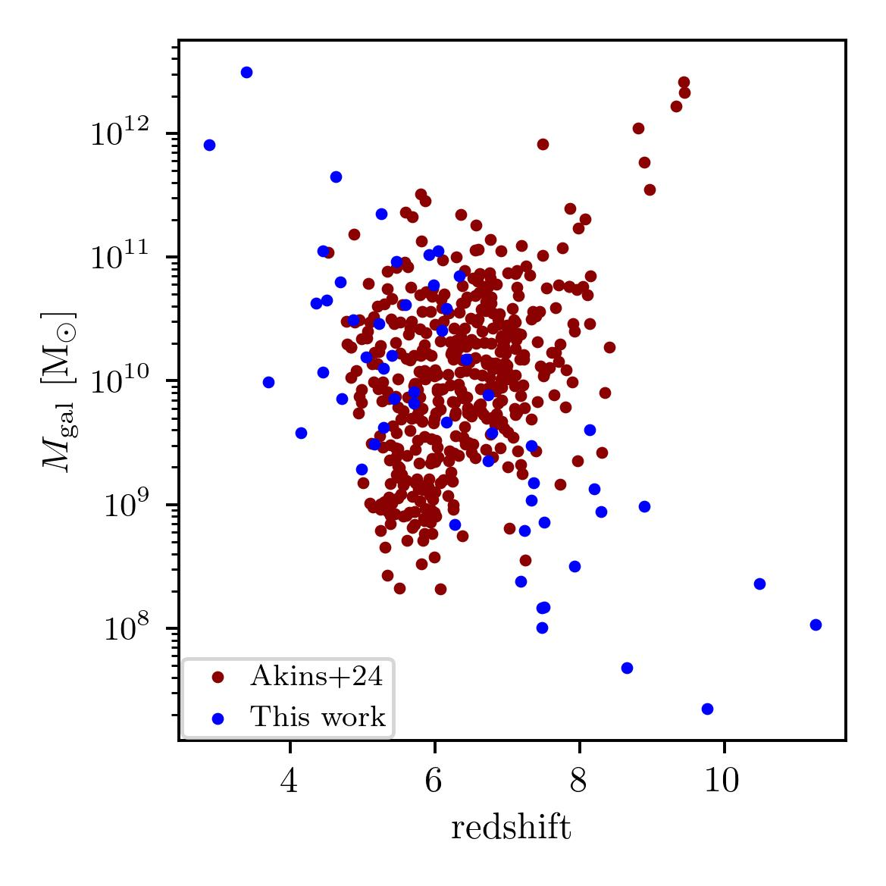
| Intrinsic | Reference | |||
|---|---|---|---|---|
| (1) | (2) | (3) | (4) | (5) |
| 3 | 0.30 dex | Lee et al. (2012) | ||
| 4 | 0.53 dex | Song et al. (2016) | ||
| 5 | 0.42 dex | Song et al. (2016) | ||
| 6 | 0.30 dex | Stefanon et al. (2021) | ||
| 7 | 0.30 dex | Stefanon et al. (2021) | ||
| 8 | 0.30 dex | Stefanon et al. (2021) | ||
| 9 | 0.30 dex | Stefanon et al. (2021) | ||
| 10aa نظرًا لعدم وجود ارتباط منشور للانزياح نحو الأحمر 11، فإننا نستخدم نفس الشيء كما هو الحال في في Stefanon et al. (2021). | 0.30 dex | Stefanon et al. (2021) |
كما أنصاف أقطار المصادر الموجودة في S+25 لم يتم نشر العينة بعد، ونفترض هنا أنهم يتبعون نفس توزيع العينة في A+24، حيث يبدو مستقلاً تقريبًا عن الكتلة (انظر الملحق A). نحصل على نصف القطر الفعال للمجرات الموجودة فيها A+24 عينة. هناك، قام المؤلفون بضرب نصف القطر (بالmas) في المسافة الزاوية . نظرًا لأن أحجام المجرات تمتد على عدة أوامر من حيث الحجم، فقد أجرينا التركيب في الفضاء اللوغاريتمي، المعروف باسم . لقد استخدمنا نهج نموذج الخليط الغاوسي، حيث تم وصف التوزيع على أنه مجموع المكونات الغاوسية المستقلة . يتم إعطاء كثافة الاحتمالية بواسطة حيث و و هي الوزن والمتوسط والانحراف المعياري للمكون ، على التوالي، الخاضع للقيد . تم تقدير المعلمات باستخدام خوارزمية تعظيم التوقعات. قمنا بمقارنة النماذج بمكونات و (انظر الشكل 2)، وقمنا بتقييم مدى جودة الملاءمة باستخدام إحصائيات كاي-تربيع المختزلة () المحسوبة على صناديق المدرج التكراري بافتراض أن الحجم الثابت يساوي dex. قبل التركيب، استبعدنا كائنًا واحدًا بنصف قطر فعال kpc. وبما أن هذا الجسم كان المجرة الوحيدة في العينة بمثل هذا النطاق الكبير، فإن معاملته كجزء من التوزيع المستمر من شأنه أن يؤثر بشكل غير متناسب على الملاءمة البارامترية أو يتطلب مكونًا ثالثًا غير مبرر إحصائيًا؛ تسمح إزالته بتوصيف قوي للمجموعات السكانية المدمجة والممتدة. على الرغم من الانزياح الأحمر وتوزيعات الكتل لل A+24 العينة و S+25 تختلف العينة الفرعية قليلاً، ونحن نفترض أن توزيع نصف القطر المستخدم هنا يوفر تقديرًا متحفظًا كما تمت مناقشته في الملحق B. لقد فحصنا كيفية تأثر النتائج بأخذ العينات من توزيعات المكون الواحد والمكونين ولم نجد أي تغييرات ذات صلة.
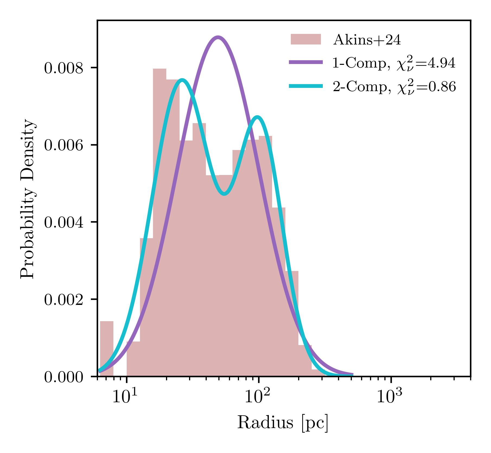
2.2 ديناميكيات النقاط الحمراء الصغيرة
في هذا القسم الفرعي نصف وصفنا لتطور الكتلة والحجم لـ LRDs.
نحن نستخدم نموذج لعبة مبسطًا لتطور الكتلة ونصف القطر لـ LRD حيث يتم تقريب كل من المعلمات و كقوانين قوة للزمن. على وجه التحديد، يتم إعطاء تطور الكتلة بواسطة
| (2) |
مع الأس لقانون القوة. ومن ناحية أخرى، فإن تطور نصف القطر يعتمد ضمنيًا على الوقت. ويفترض وجود علاقة بين كتلة النجم ونصف قطره، أي:
| (3) |
حيث هو أس الارتباط 22 2 لاحظ أن تطبيع الارتباط يكون فرديًا لكل مصدر من أجل مطابقة نصف القطر النهائي الذي تم أخذ عينات منه من التوزيع. ومن المفترض أن يكون في نطاق . هذه المعلمة هي نقطة رئيسية في النقاش الرصدي عند الانزياح الأحمر العالي. على سبيل المثال، قام Allen et al. (2025) بقياس ميل علاقة الحجم-الكتلة الثابتة للمجرات المكونة للنجوم من . في المقابل، وجد Ormerod et al. (2024) أن هذه العلاقة تنهار عند ، حيث تظهر أحجام المجرات اعتمادًا ضئيلًا أو معدومًا على الكتلة النجمية (مما يعني ). بالنسبة إلى NSCs، لدينا ، في حين أن المجرات من النوع المبكر لها قيم نموذجية من (Shen et al., 2003) والمجرات من النوع المتأخر لها (Shen et al., 2003; Lange et al., 2015). يمكن لنموذجنا، الذي يختبر نطاقًا واسعًا من ، أن يوفر قيودًا على المسار التطوري الذي يكون أكثر اتساقًا مع الخصائص المرصودة لـ LRDs.
2.3 تشكل الثقوب السوداء عبر التصادمات النجمية
يوفر عمل Escala (2021) أدلة رصدية تدعم تشكل BH الضخم بسبب الاصطدامات النجمية الهاربة في الأنظمة النجمية الكثيفة. في الأنظمة ذات المقاييس الزمنية الاصطدامية () الأقصر من عمر النظام، يؤدي عدم الاستقرار العالمي إلى تشكل أجسام ضخمة عبر الاصطدامات النجمية الجامحة. تم اختبار هذا السيناريو باستخدام عمليات محاكاة مباشرة مخصصة لجسم بواسطة V+23 وكذلك من خلال المقارنة والتحليل التفصيلي مع بيانات الأدبيات (\al@VERGARA2024,VERGARA2025a,VERGARA2025b; \al@VERGARA2024,VERGARA2025a,VERGARA2025b; \al@VERGARA2024,VERGARA2025a,VERGARA2025b).
في الشكل 3، نعرض مخططًا لنصف القطر للكتلة مقسمًا إلى منطقتين رئيسيتين حسب حالة المقياس الزمني الاصطدامي (الخط الصلب الأسود، المحدد في المعادلة 4) الذي يساوي عمر الكون ( Gyr). على الجانب الأيسر من المقياس الزمني للتصادم، تكون الاصطدامات ذات صلة. هناك، يكون المقياس الزمني للتصادم أقصر من عمر النظام (أي )، مع عمر النظام. في الجانب الأيمن من خط المقياس الزمني للتصادم، تكون الاصطدامات أقل أهمية (لكنها لا تزال تحدث) لأن المقياس الزمني للتصادم أكبر من عمر النظام (). نوضح كيف أن NSCs المرصود يتواجد في مناطق مستقرة داخل مخطط الكتلة-نصف القطر للأنظمة النجمية، محددًا بخط يصبح فيه النطاق الزمني للاصطدام Gyr. نعرّفها على أنها Binney et al. (2009)
| (4) |
مع كثافة عدد النجوم ( للأنظمة ذات التناظر الكروي)، المقطع العرضي و رقم سافرونوف، و، وهو تشتت السرعة تحت افتراض التوازن الفيروسي.
في الشكل 3، نعرض أيضًا الكتلة ونصف القطر (المقدرة بـ ، مع الدقة المكانية ) لـ SMBHs في عينة Gültekin et al. (2009)، حيث نشير إلى SMBHs التي تم حلها جيدًا للمرشحين ذوي نصف قطر التأثير () أكبر من ثلاث دقة مكانية. توجد BHs التي تم حلها جيدًا في النظام حيث تكون الاصطدامات النجمية ذات صلة بديناميكيات النظام. توجد SMBHs (المعروفة باسم ) التي لم يتم حلها مكانيًا في المنطقة المستقرة. وفي هذه الحالة، ينبغي اعتبار نصف القطر بمثابة الحد الأعلى فقط. وهذا لا يمثل مشكلة لأن الحل الأفضل قد يحول مواقف السكان الذين لم يتم حلهم إلى اليسار.
وبالمثل، فإن LRDs قريبة من النظام الذي ستكون فيه الاصطدامات ذات صلة، ولكن في موضع مختلف على مخطط الكتلة-نصف القطر. نقوم بتضمين مجرة مرجعية باللون الأخضر (مع الكتلة النهائية تساوي M⊙ ونصف القطر pc) لتوضيح كيفية تحركه في المخطط (من اليسار إلى اليمين) أثناء تطوره وفقًا لنموذج قانون القوة (المعادلةتين 2 و 3) ووصوله إلى الكثافة النهائية M⊙ pc-3 (بافتراض وجود نظام يتكون من نجوم ذات كتلة شمسية) يشبه كثافات LRD المحسوبة بواسطة Guia et al. (2024).
كما ذكرنا سابقًا في المقدمة، تعد LRDs أماكن ولادة محتملة لـ BHs الضخمة نظرًا للكثافات العالية التي يمكن أن تصل إليها قلوبها (Guia et al., 2024). نهج مختلف (مثلاً، نماذج تحليلية ونماذج N-Body ونماذج Fokker-Plank Pacucci et al., 2025) يُظهر أن تشكل جسم ضخم بسبب ديناميكيات نجمية خالصة أمر متوقع، وعلى الأرجح يتشكل مباشرة في نطاق فائق الكتلة في حالة LRDs، والذي كان في البداية أكثر إحكاما (Escala et al., 2025).
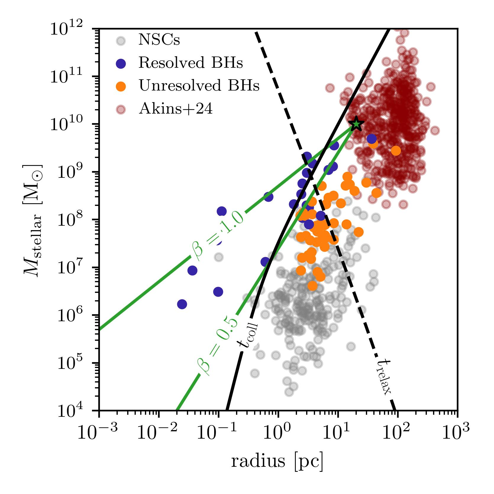
في عمليات محاكاة N-body المباشرة التي تبحث في هذا السيناريو، وجد أن كفاءة تشكل BH، المعرفة بـ (حيث هي الكتلة النجمية للنظام و هي كتلة BH)، وصلت إلى قيم تصل إلى في مجموعات كثيفة ذات كتل نجمية حول M⊙ (V+23). تمثل هذه الكفاءة حد التشبع الملحوظ في البيئات ذات الكثافة الترتيبية M⊙ pc-3. تتوافق مثل هذه الظروف القاسية مع الكثافات الأساسية المقدرة لـ LRDs (Guia et al., 2024). علاوة على ذلك، تشير المقارنات مع عمليات رصد الأنظمة النجمية الكثيفة إلى أن هذه الآلية يمكن أن تفسر BHs بكتل تصل إلى M⊙ (V+24)، يدعم السيناريو حيث يتم تحويل النوى الكثيفة لـ LRDs بكفاءة إلى BHs الضخمة. لقد أظهروا أيضًا كيف تعتمد هذه الكفاءة على نسبة الكتلة النجمية إلى الكتلة الحرجة ، والتي تلخص فكرة الاصطدامات النجمية، والتي تُعرف بأنها
| (5) |
حيث هو نصف قطر النظام، و كتلة نجم واحد، و عمر النظام، و هو المقطع العرضي الفعال.
في نموذجنا، نستخدم الصيغة المناسبة من V+25b لتقدير كفاءة التشكيل BH، المعطى بالرمز
| (6) |
وفي المجرات التي يتم الوصول فيها إلى هذا الشرط، نقوم بتقييم هذه الكفاءة عند ، حيث ستكون قيمة الكفاءة أكبر في ذلك الوقت. وحتى لو لم يتم استيفاء الشرط، فلا يزال من الممكن الحصول على كفاءات أكبر من الوحدة، مما يعني أن جزءًا ذا صلة من الكتلة النجمية يذهب إلى جسم ضخم. لقد تحققنا من أن المنتج يتزايد بشكل رتيب مع مرور الوقت في هذه النماذج. لذلك، قمنا بتقييم الكفاءة عند العمر المرصود للمجرة عند ، حيث نقدر عمر النظام بناءً على انزياحه نحو الأحمر المرصود. باختصار، نقوم بتعيين كتلة BH كـ ، حيث يتم إعطاء الكفاءة بواسطة المعادلة 6. يتم تقييم النسبة بين كتلة المجرة والكتلة الحرجة () عند أو وفقًا لذلك. الحد الأقصى لكتلة BH الذي تم التحقق من صحة النماذج له هو بترتيب M⊙، والذي نعتبره الحد الأعلى (\al@VERGARA2023, VERGARA2024; \al@VERGARA2023, VERGARA2024). في حين أنه من الممكن أن يمتد حد صلاحية النموذج إلى كتل أعلى، إلا أننا نلاحظ مع ذلك أن التأثيرات الإضافية قد تصبح ذات صلة. التطور النجمي غير مؤكد عند هذه المقاييس الجماعية وتلك النطاقات الديناميكية الكبيرة. نحن نعتمد هذا الحد الأعلى لأن عينات المراقبة في الدراسات المذكورة أعلاه لا تزال تتضمن M⊙ BHs والتي تبين أن العلاقة صالحة لها. وبطبيعة الحال، مع ذلك، فإن الحد الدقيق للصلاحية سيحتاج إلى مزيد من التحديد من خلال التحقيقات النظرية والرصدية.
تشير الآثار المترتبة على كفاءة التشكل العالية هذه () أولاً إلى أنه في البيئات الأكثر كثافة ذات الانزياح الأحمر العالي، فإن BH المركزي ليس مجرد نتيجة ثانوية لتطور المجرة ولكنه مكون هيكلي مهيمن، مما قد يفسر نسب المرتفعة بشكل غير طبيعي التي لوحظت في LRDs (Juodžbalis et al., 2024b). ثانيًا، يخفف هذا السيناريو الحاجة إلى تراكم إدنغتون الفائق المستمر لتنمية BH من الكتلة النجمية. وبالتالي، يمكن أن توجد هذه BHs الضخمة في حالة هادئة أو منخفضة التراكم، مما يؤدي بشكل طبيعي إلى التوفيق بين كتلها الكبيرة المستنتجة وبين عدم اكتشافات الأشعة السينية الصارمة التي تم الإبلاغ عنها في تحليلات التكديس.
2.4 بيانات خلفية الأشعة السينية وانبعاث الثقوب السوداء
قمنا بجمع بيانات الأشعة السينية من عملية التكديس بواسطة S+25حيث استخدموا بيانات من المجال العميق Chandra الجنوب (CDF-S). إجمالي وقت التعرض باستخدام البيانات من كافة المصادر المتاحة، تصل إلى Ms، مما يؤدي إلى حساسية غير مسبوقة لـ .
يتم توفير الحدود العليا للاكتشافات عند مستوى ، حيث يمثل الانحراف المعياري لضوضاء الخلفية. للشريط الناعم ( keV) والنطاق القاسي ( keV) الحدود العليا هي و، على التوالي، في وحدات .
نحن نمثل انبعاث الأشعة السينية الجوهري لـ SMBHs المتكون في نموذجنا. نحن نفترض قانون قوة مع قطع أسي عالي الطاقة (مثلاً، Yang et al., 2020)
| (7) |
حيث هو دليل الفوتونات. عادةً ما يتم تعيين قيمة على (مثلاً، Piconcelli et al., 2005; Yang et al., 2016; Liu et al., 2017; Yang et al., 2020) و keV، للمجرات Seyfert (انظر Ricci et al., 2017). ومع ذلك، فإن الانبعاث الضعيف لـ LRDs في نطاق الأشعة السينية يتوافق مع قيمة أكثر حدة لـ (مثلاً، Zappacosta et al., 2023) أو مع وجود قطع منخفض الطاقة جدًا keV. نحن نعتمد القيمة الأساسية مع قطع منخفض الطاقة keV. لقد فحصنا أيضًا إمكانية عدم العثور على أي فرق في نتائجنا.
ثابت التطبيع من مكافئ. تم ضبط 7 بحيث يتوافق لمعان الأشعة السينية المدمج مع جزء من لمعان إدنغتون الخاص بـ BHs، أي،
| (8) |
حيث هي دورة النشاط، هي نسبة اللمعان البولومتري إلى لمعان إدنغتون ()، جزء اللمعان البولومتري المنبعث في الأشعة السينية، وأخيرًا هو عامل يأخذ في الاعتبار احتمال عدم وجود كل تشكل المجرات BH.
يقيد نهجنا المنتج بدلاً من المعلمات الفردية. ويتراوح أكثر من . هنا، هو الأدنى لعدم الانبعاث. يتوافق الحد الأعلى مع سيناريو ”نمو الكوازار” - الضروري لنمو BHs الضخم عند - مما يعني، على سبيل المثال، وجود جزء احتلال قريب من الوحدة مع دورة تشغيل نشطة تبلغ عند ، أو بدلاً من ذلك، رشقات نارية قصيرة من تراكم إدنغتون الفائق. () مع دورة عمل . يتم بعد ذلك تعديل التحويل إلى تدفق الأشعة السينية الذي يمكن ملاحظته بواسطة ، والذي نعتمده من التصحيحات البولومترية المعتمدة على اللمعان (Duras et al., 2020) لحساب التخفيف الطيفي بمعدلات التراكم العالية هذه.
نظرًا لأن المعلمة في نموذجنا تمثل نشاط التراكم الفعال بمتوسط الوقت، فعليًا، فإن هذا يؤدي إلى انخفاض نسبة إدنغتون () ودورة عمل التراكم ()، مثل . بالنسبة لتحليل تكديس الأشعة السينية، الذي يقيس متوسط التدفق على السكان، غالبًا ما لا يمكن التمييز بين هذين العاملين؛ ينتج المصدر الذي يتراكم بشكل مستمر عند لمعان إدنغتون إشارة مكدسة مماثلة لمصدر يتراكم عند لمعان إدنغتون مع دورة عمل . ومع ذلك، فإن دورة النشاط لها آثار مهمة على النمو الشامل. لتنمو من بذرة صغيرة إلى M⊙، BH لا يتطلب معدل تراكم عاليًا فحسب، بل يتطلب أيضًا دورة تشغيل عالية ().
نقوم بتضمين نموذج امتصاص لمراعاة توهين الانبعاث بسبب وجود الكثافات العمودية، والتي وصفناها عبر عامل القمع، أي ، حيث هو إجمالي المقطع العرضي كدالة لطاقة الفوتونات (انظر المعادلة 9) و هو متوسط كثافة العمود. يتم إعطاء إجمالي المقطع العرضي بواسطة
| (9) |
مع المعدنية، هي وفرة القيمة الشمسية المأخوذة من Wilms et al. (2000). يتم الحصول على المقاطع العرضية للمعادن () باستخدام التركيبات المقدمة من قبل Verner et al. (1996). وأخيرا، يتم إعطاء التدفق المرصود في نطاق معين بواسطة
| (10) |
حيث هي مسافة اللمعان الكوني، فإن العامل يصحح التدفق من أجل الانزياح الأحمر للفوتونات، ويتم تمديد الفاصل الزمني للطاقة عن طريق التوسع الكوني.
3 النتائج
هنا، نصف النتائج الرئيسية لعملنا. في القسم 3.1 نعرض نتائج تعداد BH المتوقع بناءً على سيناريو التشكل القائم على الاصطدام. بعد ذلك، نقدم القيود المفروضة على هذه الفئة من السكان من الحدود العليا لتدفق الأشعة السينية في القسم 3.2. بالنسبة لجميع الحسابات، نعتمد السيناريو المحافظ الذي لا يمكن أن تتجاوز فيه كتل BH M⊙ كما هو موضح في القسم 2.3.
3.1 مجتمع الثقوب السوداء المتوقع من السيناريو القائم على التصادمات
ونذكر هنا باختصار أنه بالنسبة للمجرات التي وصلنا فيها إلى الحالة أثناء تطور كتلتها (حجمها)، فإننا نحسب الكتلة المتوقعة لـ SMBH في ذلك الوقت؛ عندما لا يكون الأمر كذلك، نحسب المنتج في الوقت المقابل لعمر النظام النجمي، كما هو محدد من خلال الانزياح الأحمر المرصود. هنا، نتحقق أولاً من عدد الأنظمة التي تم استيفاء شرط لها، مع التأكيد عليها باستخدام المعلمات و، وهي أسس قانون القوة التي تصف التطور الزمني لكتلة LRDs وعلاقة الكتلة ونصف القطر المعتمدة. في الشكل 4، نقدم خريطة مرمزة بالألوان للكسر للأنظمة التي تصل إلى هذا الشرط كدالة للمعلمات و. ونلاحظ أن النتائج تعتمد في الغالب على المعلمة . نحصل على أجزاء كبيرة من هذه المجرات باستخدام ، حتى لو كان في بعض الحالات لا يزال يتم الوصول إلى الشرط (باعتماد ). هنا، يتوافق مع معدل تشكل النجوم الثابت (SFR) بينما يشير إلى زيادة SFR مع مرور الوقت. من الصعب إلى حد ما التوفيق بين القيود المفروضة على ؛ في NSCs حصلنا على علاقة نموذجية مع . بالنسبة للمجرات من النوع المبكر، القيم النموذجية هي (Shen et al., 2003)، في حين أن القيم النموذجية للمجرات من النوع المتأخر هي (Shen et al., 2003; Lange et al., 2015). إذا كانت علاقة نصف القطر للكتلة LRDs تشبه إلى حد ما الحلزونات أو NSCs وتزداد SFR مع مرور الوقت، فمن الممكن بالتالي أن يتم الوصول إلى الشرط على الأقل في بعض الأنظمة، مما يسمح بكفاءة عالية بشكل خاص لتشكيل SMBHs. إذا لم يتم الوصول إلى هذا الشرط، فمن الممكن أن يتشكل BH، ولكن ربما بكفاءة على مستوى النسبة المئوية أو أقل من ، المعطى من خلال المعادلة 6.
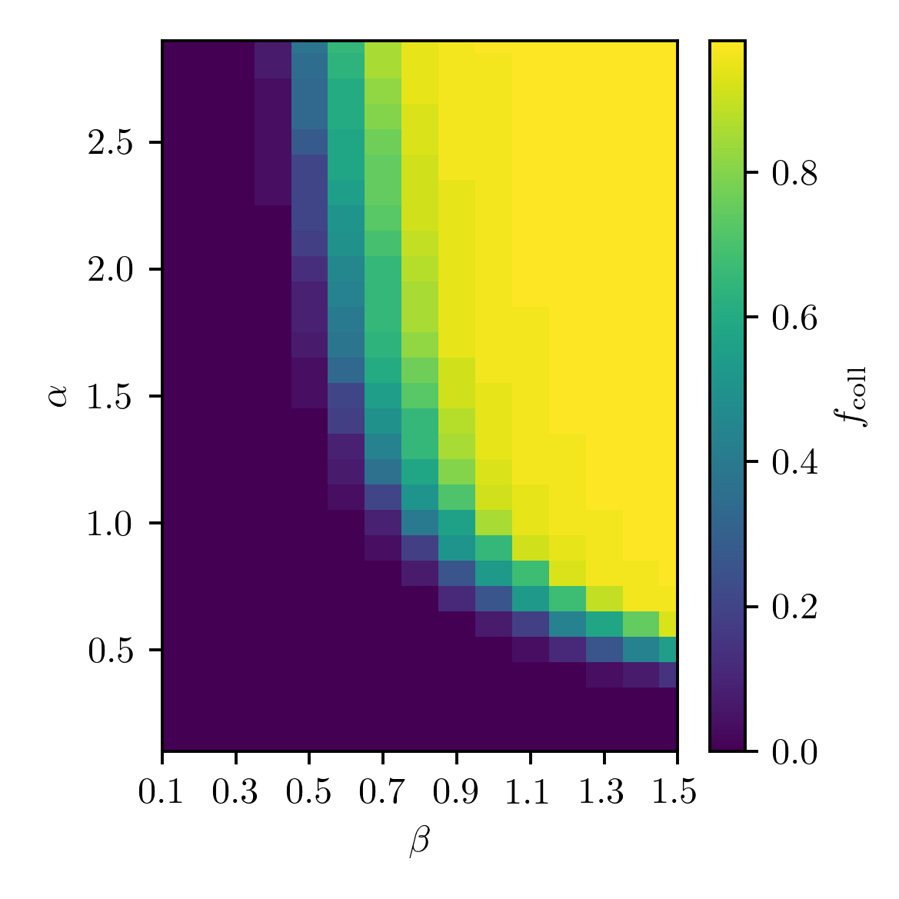
في الشكل 5 نعرض SFR وفقًا لنموذجنا للمجرات في العينة الخاصة بنا لقيم مختلفة من . على وجه التحديد، نعرض توزيع و (الخطوط المتصلة الزرقاء والخضراء والبرتقالية، على التوالي). للمقارنة، ندرج تقديرات SFR الرصدية، وبالسماوي نظهر المنطقة المقابلة لـ SFR لـ LRD عند ، ويتم الحصول على الأدنى لـ SFR من خط [OII] الذي تم تصحيحه بواسطة بقيمة متوسطة M⊙ yr-1، يوفر الخط (الضيق) (الذي تم تصحيحه أيضًا بواسطة ) قيمة أعلى قليلاً من M⊙ yr-1. ومع ذلك، فإن اللمعان الجوهري عند عند Å من تناسب قانون الطاقة المستمر UV يقترح SFR لـ M yr-1 (Killi et al., 2024). باللون البنفسجي، يظهر SFR لثلاثة LRDs. متوسط SFRs (مع الأخذ في الاعتبار آخر Myr) هي و و M⊙ yr-1 (Wang et al., 2024). باللون الرمادي، نعرض LRD مع أعلى تقدير SFR، وقد تم رصد المجرة في وتشير SED إلى أن النجوم تهيمن على السلسلة، وهو ما يفسر باستمرار عدم اكتشاف الأشعة السينية وعدم وجود تصاعد للغبار الساخن في منتصف الأشعة تحت الحمراء. تنشأ المشكلة الرئيسية عند شرح لمعان ، SFR لـ M⊙ yr مطلوبة-1 لإنتاج فوتونات مؤينة كافية لمثل هذا الانبعاث (Labbe et al., 2024). كما هو متوقع، فإن القيم الأعلى لـ (المحددة في المعادلة 2) تحول التوزيع إلى اليمين. تتوافق ذروة التوزيع لـ و بشكل عام مع SFRs المقدرة من الأدبيات. بدمج المعلومات الواردة في الشكل 4 والشكل 5، إذا تأكدنا من الملاحظات أن LRDs عبارة عن أنظمة نجمية مدمجة وضخمة تم بناؤها في فترة زمنية قصيرة، فمن المرجح أن تكون LRDs أماكن مثالية لتشكيل BHs الضخم نتيجة الاصطدامات النجمية.
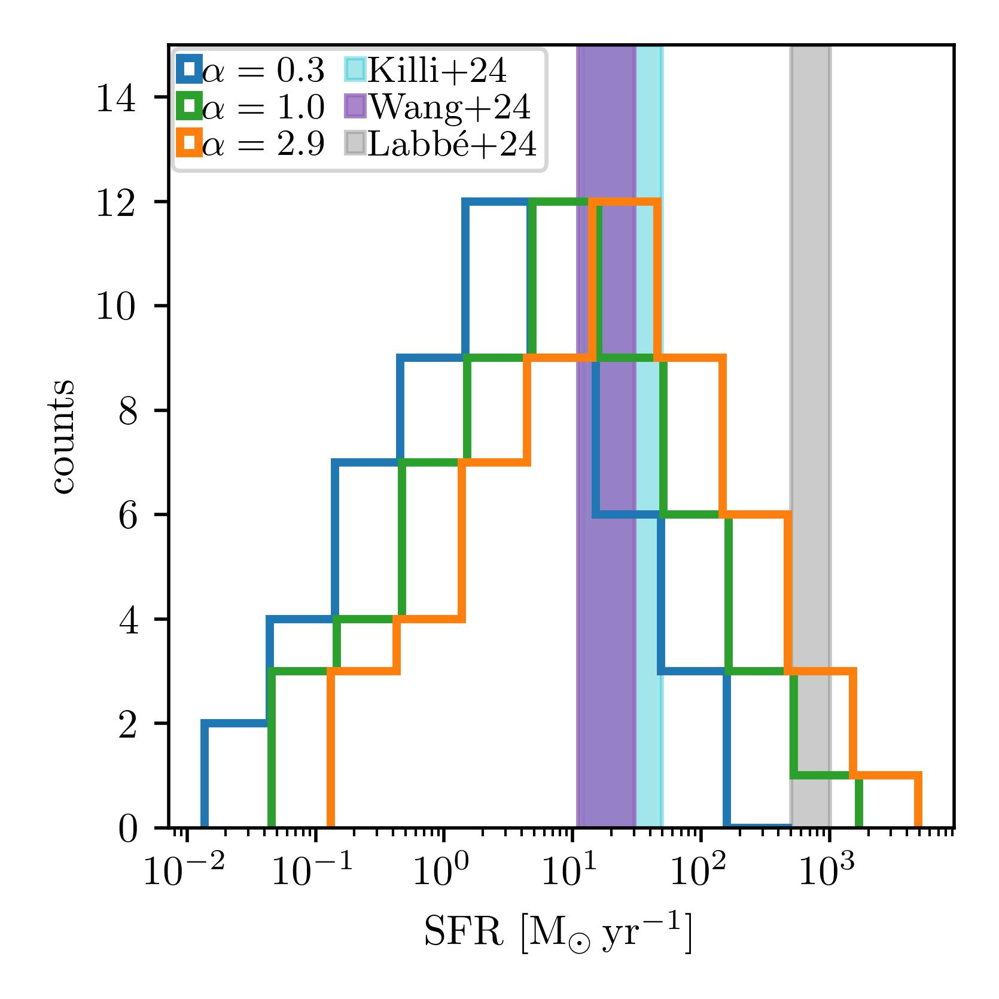
نعرض الآن العلاقة المتوقعة بين كتلة BH والمجرات في إطار نماذجنا، في الشكل 6. هناك، نشير إلى نطاق الحلول الممكنة لـ بين و و بين و. نسلط الضوء على نتائج الحالة الإيجابية مع و، حيث تكون كفاءات تشكل BHs ضخمة عالية إلى حد ما ونميل إلى إنتاج SMBHs أعلى بكثير من العلاقة المرصودة لمجرات الكون المحلية. السيناريو المحافظ لدينا والذي يكون فيه الأقصى المسموح به لكتلة BH هو M⊙ كما هو موضح في القسم 2.3 (النقاط الصفراء) يُظهر كتلًا تتدرج مع للمجرات التي تصل كتلتها إلى M⊙، في حين أن الارتباط المحلي المقاس بواسطة Reines and Volonteri (2015) يتم قياسه كـ (انظر المنطقة الرمادية في الشكل 6). يظهر السيناريو المتفائل لدينا في الشكل 6 (النقاط الخضراء) حيث نجد أن جميع بذور BH تتبع علاقة . ليس من غير المتوقع تمامًا أن يتم قياس نموذج و على أنه . في هذا النموذج، ، مما يعني ضمنًا كفاءات BH بترتيب مما يؤدي إلى . نحن نستخدم السيناريو المحافظ للتحليل اللاحق في هذه الورقة. الكتل التي تم الحصول عليها في هذا السيناريو قابلة للمقارنة مع نقاط البيانات ذات الانزياح الأحمر العالي من Harikane et al. (2023), Maiolino et al. (2024)، و Zhang et al. (2025). ومع ذلك، كما هو موضح في الشكل، فإن فضاء المعلمات الإجمالية المحتملة أكبر بكثير، واعتمادًا على التاريخ المفترض للمجرة، تتضمن فضاء المعلمات أيضًا الحلول الممكنة مع SMBHs عند كتل أقل بكثير. من المهم التأكيد على أن التنبؤات المقدمة هنا تعتمد فقط على نموذج البذر نفسه ولا تأخذ في الاعتبار بعد النمو المحتمل من خلال تراكم سيناريوهات التراكم الفائقة لإيدنجتون.
بالنظر إلى النقاط المذكورة أعلاه، قمنا بتقييد من مقارنة تواريخ النماذج مع SFRs النموذجية (Killi et al., 2024; Wang et al., 2024; Labbe et al., 2024). للحصول على تصادمات فعالة أيضًا، يجب أن يكون من رتبة . في حالة القيمة المنخفضة جدًا ، لن يكون هناك تصادمات، في حين أن القيمة العالية جدًا ربما تكون غير معقولة لأن أكبر علاقات الكتلة ونصف القطر المرصودة لها مؤشرات قانون القوة (Shen et al., 2003). عند النظر في قيود الأشعة السينية على مصادرنا، فإننا سوف نستخدم ما ورد أعلاه كمعلمات مرجعية للنموذج الديناميكي.
في الملحق C، نوضح كيف يؤثر التراكم اللاحق على كتل BH النهائية. نوضح أنه بالنسبة للنماذج التي تتشكل فيها البذور مبكرًا (على سبيل المثال، لارتفاع )، يتوفر نطاق زمني طويل للنمو الشامل (انظر الشكل 17). ونظرًا للكتلة الكبيرة بالفعل من بذورنا، فإن هذا النمو اللاحق يجب أن يكون مقيدًا. في الشكل 18، نستكشف مساحة معلمة التراكم من خلال النظر في نموذج BH منخفض الكفاءة الإشعاعية المنخفضة ونموذج عالي الكفاءة (الدوران السريع) (مثلاً، Shapiro, 2005). لقد وجدنا أنه بالنسبة للكفاءة الإشعاعية المنخفضة BHs، حتى معدلات إدنغتون الفرعية المعتدلة () يمكن أن تؤدي إلى كتل نهائية كبيرة بشكل غير فيزيائي تتجاوز العلاقات المرصودة بشكل منهجي. في المقابل، بالنسبة للكفاءة الإشعاعية العالية BHs، يكون النمو الشامل أكثر تدرجًا وتنظيمًا ذاتيًا. في هذا السيناريو، معدل معتدل دون مستوى إدنغتون ( كما رُصد في AGNs من النمط 1 في حقل COSMOS، Trump et al., 2009) هي آلية معقولة ماديًا، وتنتج عامل نمو نموذجي لـ . معدل إدنغتون الفرعي المنخفض (أي ) هو أيضًا قابل للتطبيق تمامًا، وهو ما يمثل نظام اللمعان المنخفض AGNs (مثلاً، Ho, 2008). بينما يبدو أن قيود الأشعة السينية، على الأقل بالنسبة إلى السكان العاديين، تحد من مثل هذه السيناريوهات، فإننا نؤكد أيضًا على أن JWST قد عثر على عدد قليل من الأجسام ذات BH لتنتفخ نسب الكتلة من الترتيب (Juodžbalis et al., 2024a)، والتي يمكن تفسيرها في سيناريو تشكل البذور على نطاق واسع والتراكم الفعال اللاحق.
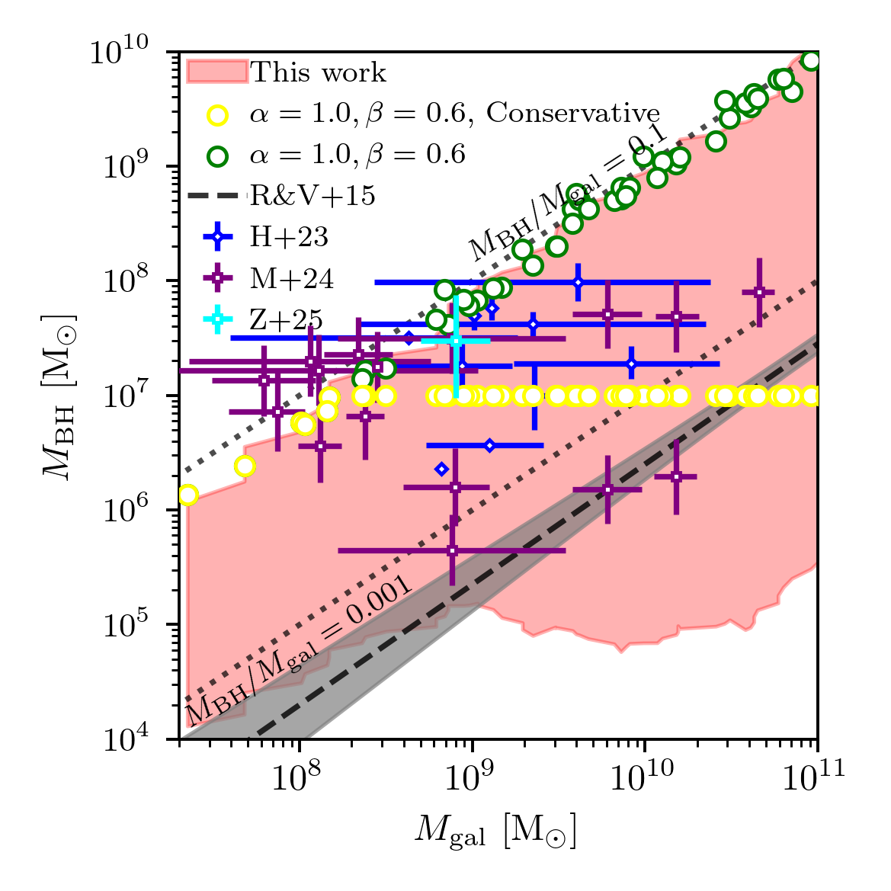
3.2 تنبؤ خلفية الأشعة السينية
نعرض في هذا القسم القيود الناتجة عن مقارنة الانبعاثات المتوقعة في سيناريوهات مختلفة مع قيود المراقبة في نطاقي الأشعة السينية الناعمة والقاسية. في الأقسام الفرعية التالية، سنناقش القيود التي يمكن استخلاصها من معلمات و التي تميز تاريخ LRDs وعلاقة الكتلة ونصف القطر، ومتوسط كثافة العمود ()، والمعدنية () بالإضافة إلى معلمة المحددة في المعادلة 8. وبما أن فضاء المعلمات كبيرة، فمن الواضح أن هناك انحطاطات في القيود المحتملة. ومع ذلك، فإن الحدود العليا للتدفقات تستبعد بعض الاحتمالات ومع زيادة المعلومات حول هذه المصادر، ربما يمكن تخفيف المزيد من القيود في المستقبل.
3.2.1 قيود على تاريخ تشكل النجوم وعلاقة الكتلة-نصف القطر
بالفعل في القسم 3.1، قمنا بتقييد فضاء المعلمات المحتملة لـ و مع الأخذ في الاعتبار معدلات تشكل النجوم النموذجية المرصودة في LRDs بالإضافة إلى قيود النموذج من متطلبات وجود تصادمات. هنا، نتحقق مما إذا كانت هذه متوافقة أيضًا مع القيود المفروضة على خلفية الأشعة السينية. ولهذا الغرض، من المهم أن نفكر بعناية في المعلمات التي يمكن أن نفترضها بالنسبة لكثافة العمود والمعدنية ومستوى النشاط.
كشفت الملاحظات التي أجراها JWST من حيث المبدأ عن خطوط انبعاث واسعة في إطار الراحة UV/البصري، مما يشير إلى أن مناطق الخط العريض غير محجوبة نسبيًا (Greene et al., 2024). لكن، Maiolino et al. (2025) لقد جادلوا بأن السحب الكثيفة الخالية من الغبار والتي تسبب انبعاثًا واسع النطاق يمكن أن توفر في الوقت نفسه درعًا من الأشعة السينية. ونتيجة لذلك، إما أن يكون لدينا حالة درع قوي جدًا (والتي لا نستطيع بشكل أساسي تقييد المعلمات الأخرى)، أو أننا في نظام الكثافات العمودية المنخفضة. نحن نركز هنا على النظام الثاني ونعتمد قيمة مرجعية قدرها cm-2 (تحققنا من أن النتائج التالية تنطبق أيضًا في حالة الكثافات العمودية المنخفضة). لا تتوفر قياسات للمعدنية حتى الآن، ولكننا نعتمد هنا قيمة مرجعية Z⊙ كقيمة نموذجية للمجرات ذات الانزياح الأحمر العالي (مثلاً، Curti et al., 2024; Meyer et al., 2024; Sanders et al., 2024). في نظام المعدنيات العالية بشكل معقول، يكون للمنتج بين كثافة العمود والمعدنية التأثير الرئيسي فيما يتعلق بالتدريع بسبب الاعتماد الأسي. من ناحية أخرى، فإن الاعتماد على معلمة النشاط هو خطي. لذلك، سيكون من الصعب تقييد معلمة النشاط، ولكننا نفترض هنا قيمة نموذجية للتحديد. سوف نستكشف الاختلافات في كل هذه المعلمات في الأقسام الفرعية التالية.
يتم توفير نتائج النطاق اللين والنطاق القاسي في الشكل 7 (اللوحة أ واللوحة ب، على التوالي)، حيث يشير مقياس اللون إلى نسبة التدفق المتوقع مقابل التدفق الملحوظ كدالة لـ و . فضاء المعلمات المسموح بها هي التي تكون فيها نسبة التدفق المتوقع مقابل التدفق الملحوظ أقل من واحد (يوضح الخط الأحمر حيث تساوي النسبة واحدًا)، وهو ما يتوافق مع المنطقة المسموح بها في فضاء المعلمات للاختيار المحدد للعمود والمعدنية ومعلمة . تشير قيود الأشعة السينية إلى فضاء المعلمات المسموح بها لـ و، مما يعني مرة أخرى و. وبالتالي فإن قيود الأشعة السينية متوافقة مع متطلبات النموذج. في الأقسام الفرعية التالية، سوف نستخدم القيود على و المشتقة هنا، بالطبع لا نزال تحت افتراض أن الغموض غير ذي صلة (كما هو واضح لا يمكن الحصول على قيود في نظام غامض بشدة).
السلوك النوعي للشريط الصلب يشبه إلى حد كبير الشريط الناعم. هذه نتيجة عامة مفادها أن القيود التي تم الحصول عليها من النطاق اللين أكثر إحكامًا، وبالتالي سنركز في الغالب عليها بشكل مشابه لما أظهره Yue et al. (2024) أن النطاق اللين أكثر حساسية للتغيرات، على سبيل المثال، في كثافة العمود، من النطاق القاسي.
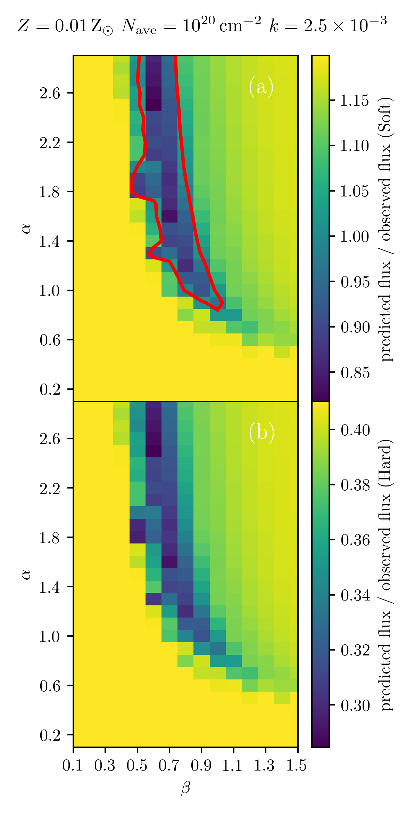
3.2.2 المعدنية ومتوسط كثافة العمود
تعد كمية التدريع للمجرات معلمة مهمة حيث أن امتصاص تدفق الأشعة السينية يمكن أن يخفف بشكل كبير من القيود المحتملة. يعتمد ذلك على متوسط كثافة العمود في المصادر وأيضًا على المعدن، حيث يمكن زيادة المقطع العرضي للأشعة السينية بشكل كبير في وجود العناصر الثقيلة.
نحن نعتبر مرة أخرى نموذجنا المرجعي لسيناريو تشكيل BH القائم على الاصطدام مع و (مع الأخذ في الاعتبار أن الاصطدامات يجب أن تكون فعالة بما فيه الكفاية مع الحفاظ على قيمة واقعية لـ ) لتقييم التدفق المتوقع وكيفية مقارنته بالحدود العليا.
في الشكل 8، نقدم نتائج قيمة ، المقابلة لحالة ذات نسبة إدنغتون عالية ودورة النشاط وكسر السكان BH في اللوحة العلوية، ونعرض نتائج قيمة تساوي لسيناريو أكثر تحفظًا (اللوحة السفلية). يشير شريط الألوان إلى نسبة التدفق المتوقع مقابل التدفق الملحوظ في النطاق اللين. حتى الآن، لم يتم استنتاج أي معادن لـ LRDs من الملاحظات. علاوة على ذلك، تشير عمليات الرصد عند الانزياح الأحمر المنخفض والعالي إلى أن نطاق المعدنيات غير مقيد بالانزياح الأحمر. في الواقع، عند الانزياح الأحمر العالي، تظهر الأجسام المتطورة للغاية مثل AGNs أيضًا معادن قريبة من القيمة الشمسية (مثلاً، Nagao et al., 2006).
بالنسبة لنموذج النشاط العالي (اللوحة العلوية)، تتوافق القيود مع الشكل الثلاثي، حيث ستكون هناك حاجة إلى كثافات عمودية معدنية منخفضة تبلغ cm-2، بينما مع زيادة المعدن، يمكن أن تكون الأعمدة السفلية من cm-2 كافية. لقد تحققنا من أن النتائج المقابلة للنطاق الصلب متشابهة جدًا. عندما نستكشف قيمة أقل لـ ، تصبح القيود أكثر إحكامًا وتنخفض كثافة العمود المطلوبة للتدريع مقارنة بالنتيجة السابقة. مطلوب كثافة عمود تبلغ cm-2 لحماية الانبعاثات عند Z⊙. من ناحية أخرى، في المعدنيات الشمسية تكون الكثافة المطلوبة في حدود cm-2.
نلاحظ أنه في نظام النشاط العالي ، نستعيد قيودًا أكثر صرامة مما كانت عليه في السيناريو المحافظ (). قد يبدو هذا غير بديهي، حيث من المعروف أن مصادر إدنغتون العالية تظهر أطياف أشعة سينية أكثر انحدارًا وتصحيحات بوليمترية أكبر (أي كفاءة أقل للأشعة السينية الجوهرية، )، مما يجعلها ”ضعيفة للأشعة السينية” نسبيًا مقارنة بمخرجاتها البولومترية. (مثلاً، Duras et al., 2020; Madau and Haardt, 2024). ومع ذلك، تظهر نتائجنا أن الزيادة الهائلة في إجمالي الميزانية البولومترية () تهيمن على قمع كفاءة الأشعة السينية. بينما يتناقص بعامل مع ارتفاع معدل التراكم من إلى ، يزداد اللمعان البولومتري بمقدار أمرين من حيث الحجم. ونتيجة لذلك، يظل صافي لمعان الأشعة السينية المطلقة () أعلى بكثير في سيناريو المرتفع. ونظرًا لأن هذه المصادر أكثر سطوعًا بشكل جوهري في الأشعة السينية على الرغم من أطيافها الأكثر انحدارًا، فمن السهل استبعادها من خلال الحدود العليا للتكديس، مما يؤدي إلى قيود أكثر صرامة لوحظت في الشكل 8.
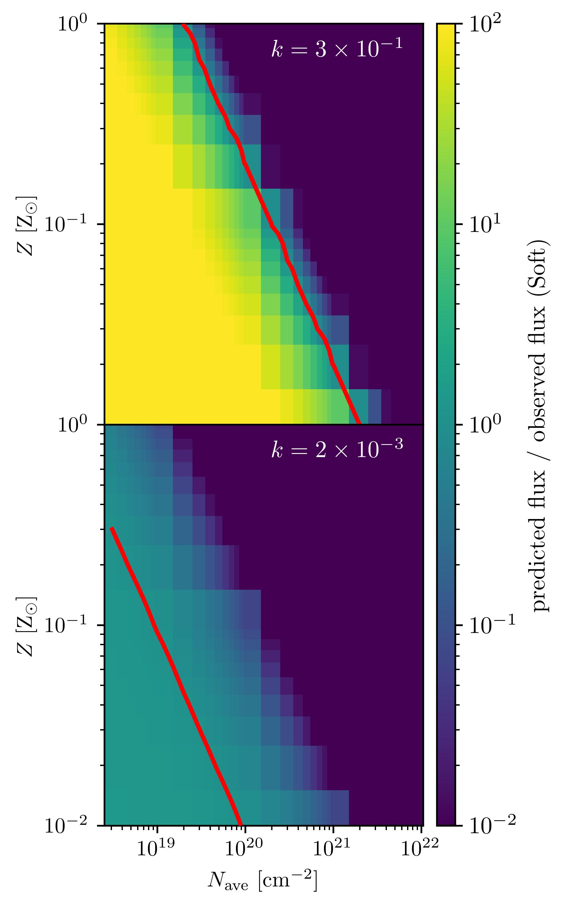
3.2.3 نشاط الثقوب السوداء ومتوسط كثافة العمود
في هذا القسم الفرعي، نقوم بتقييم القيود المشتركة على كثافة عمود الغاز ونشاط مجموعة BH، والتي قمنا بتلخيصها في معلمة المحددة بـ ، ومتوسط كثافة العمود للتدريع. نحن نعتمد نموذجنا المرجعي مع و. يتم الحصول على القيود الأقوى مرة أخرى في النطاق اللين، والذي نقدمه في الشكل 9. نجد أنه بالنسبة للمعدنية Z⊙، فإن متوسط الكثافات العمودية بترتيب cm-2 (أو أكبر) يحجب بالتأكيد انبعاث الأشعة السينية من مجموعة BH بشكل مستقل عن قيمة . ويمكن الحصول على نتيجة مشابهة جدًا من تحليل النطاق القاسي. للمقارنة، نوفر أيضًا القيود الخاصة بحالة معدنية أقل باستخدام (). هنا، هناك حاجة إلى أعمدة متوسطة أكبر لحجب انبعاث الأشعة السينية. بالنسبة إلى ، فإن مجموعة BH الخاصة بنا متوافقة مع الكثافات العمودية بالترتيب cm-2.
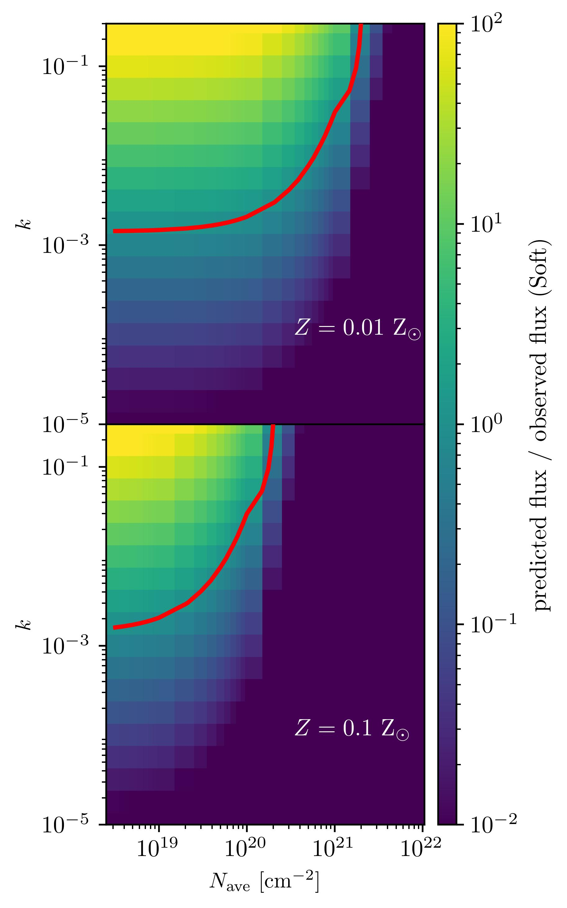
3.2.4 نشاط الثقوب السوداء والمعدنية
لتقييم القيود المشتركة على نشاط BH (المحددة من خلال ) ومعدنية عمود التدريع، نعتمد مرة أخرى نموذجنا المرجعي، مع عمود عام من cm-2.
نبدأ التحليل بمنطقة غير محجوبة، أي كما هو موضح في الشكل 8، وهي منطقة ذات cm-2، حيث يتجاوز تدفق الأشعة السينية الناتج الحدود العليا لنطاق المعدنيات التي تم النظر فيها هنا، ما لم تكن قيم .
في حالة النطاق اللين، تتنبأ المنطقة المقيدة بـ و بالحد الأعلى للتدفق بعامل . وبالتالي فإن متوسط كثافة عمود منخفض يبلغ cm-2 سيتطلب أيضًا للمعادن التي تتراوح من Z⊙.
من ناحية أخرى، بالنسبة لـ BHs ذات الانزياح الأحمر العالي، قد نتوقع قيمًا أكبر لدورة النشاط ونسبة إدنغتون، حتى لو كانت القيمة الدقيقة لـ غير مقيدة. يتحسن الوضع بشكل وثيق مع كثافة عمود أكبر تبلغ cm-2، حيث تصبح قيم متوافقة مع القيود في حالة ارتفاع المعدن. وحتى في حالة المعدنيات المنخفضة، من المحتمل تخفيف هذا التأثير عن طريق أعمدة غاز أكبر تزيد من كمية التدريع. تم تلخيص القيود العامة لهذه الحالة في الشكل 10 كدالة للمعادن وكدالة لـ .
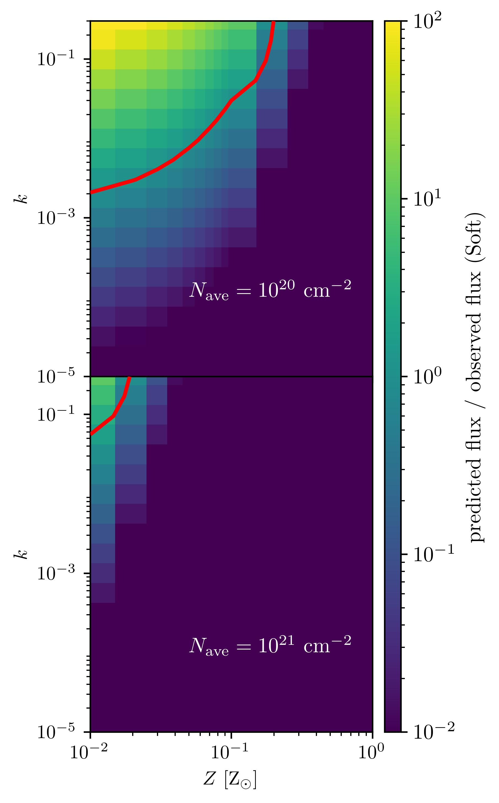
3.3 المقارنة مع كتل الثقوب السوداء المستنتجة من الأشعة تحت الحمراء
في هذا القسم، نقارن توقعاتنا بكتل BH المستنتجة من اللمعان في النطاق F444W. نقوم بتحويل المقادير الظاهرة إلى كثافات التدفق () ومن ثم إلى اللمعان البولومتري () باستخدام التصحيح البولومتري (BC)، بحيث يكون . بافتراض أن المصدر يشع عند جزء إدنغتون محدد، ، فإننا نقدر كتلة BH على النحو التالي:
| (11) |
نحن نعتمد ثلاثة BCs مختلفة من Greene et al. (2026): (قياسي)، (الأدنى)، و (الأقصى)، مما يعكس عدم اليقين في SEDs لـ LRDs. يتيح لنا استكشاف هذا النطاق وضع كتل BH المحتملة بين قوسين على الرغم من عدم وجود تصحيحات معايرة لهذه المجموعة.
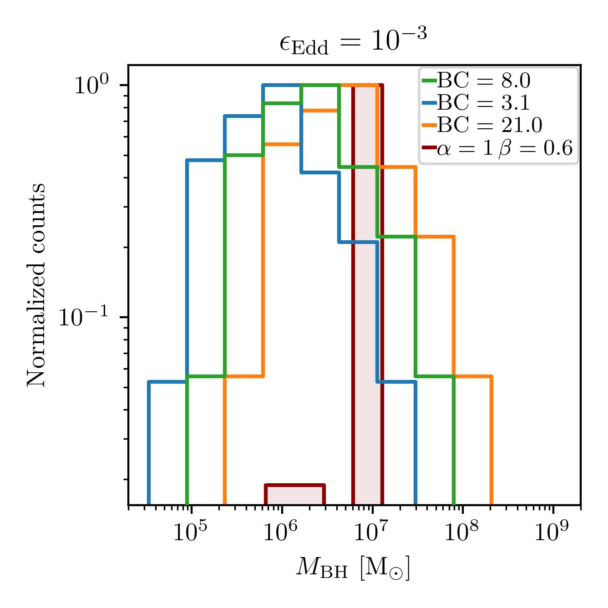
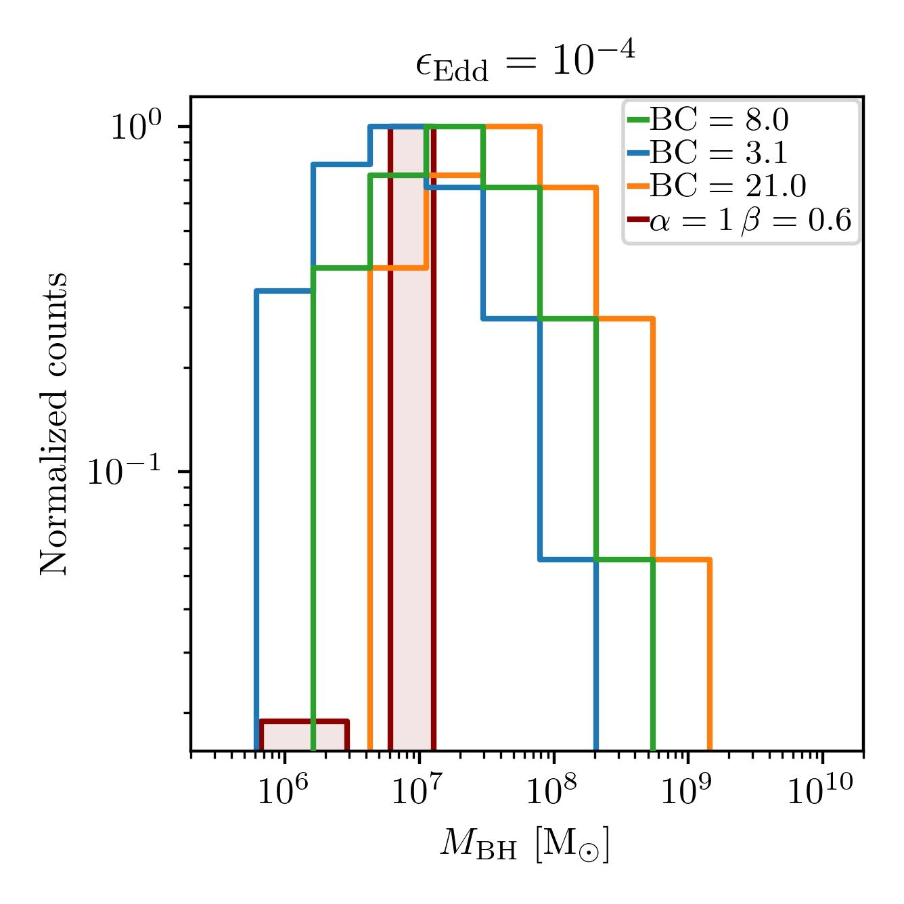
في الشكل 11، قمنا بمقارنة هذه الكتل المستنتجة من IR مع نموذج الاصطدام المرجعي الخاص بنا (، المدرج التكراري الأحمر). تفترض اللوحة العلوية وجود جزء معتدل من إدنغتون من . في هذا السيناريو، تتوافق ذروة توزيع نموذجنا () مع الجزء الأكبر من الكتل المستنتجة IR (الخطوط الخضراء والبرتقالية). ومع ذلك، نلاحظ بوضوح وجود تناقض في عروض التوزيع: في حين أن الكتل المشتقة من IR تمتد على نطاق واسع يمتد إلى ، فإن نموذجنا مقيد بشكل صارم عند بسبب حد التحقق من صحة قناة الاصطدام.
تُظهر اللوحة السفلية () الاتساق مع الأدنى BC (الخط الأزرق). نحن نستكشف أيضًا نظام التراكم العالي () في الملحق D، ونجد أن مثل هذه النسب العالية ستؤدي إلى كتل BH المتوقعة تتجاوز بشكل كبير تلك المقدرة من ملاحظات IR. وهذا يعزز استنتاجنا بأن أفضل وصف لسكان LRD هو تراكم البذور الثقيلة بكفاءة متوسطة إلى منخفضة أو مع دورات عمل منخفضة.
4 الملخص والمناقشات
في هذا العمل، نقدم تقديرات للكتل المحتملة لـ SMBHs المتكونة في LRDs عن طريق الاصطدامات. لهذا الغرض، نقدم نموذج لعبة يفترض تطور قانون القوة للكتلة النجمية مع مرور الوقت باستخدام مؤشر قانون الطاقة ، بالإضافة إلى علاقة الكتلة ونصف القطر حيث يقيس نصف القطر ككتلة للقوة . لقد قمنا بتضمين سيناريو تشكيل BH استنادًا إلى الاصطدامات النجمية الجامحة باستخدام أنظمة نجمية ذات نطاقات زمنية تصادمية أقصر من عمرها، وهو ما حفزته الدراسات السابقة لـ Escala (2021); Escala et al. (2025); \al@VERGARA2023, VERGARA2024, VERGARA2025a, VERGARA2025b; \al@VERGARA2023, VERGARA2024, VERGARA2025a, VERGARA2025b; \al@VERGARA2023, VERGARA2024, VERGARA2025a, VERGARA2025b; \al@VERGARA2023, VERGARA2024, VERGARA2025a, VERGARA2025b. نجد أن إمكانية تشكل BHs ضخمة حساسة بشكل خاص للمعلمة ()، والتي يجب أن تكون من رتبة أو أكبر حتى تكون القناة القائمة على الاصطدام عالية الكفاءة. في هذه الحالة، فهو قادر على إنتاج SMBHs أعلى بكثير من العلاقة بين الكتلة والانتفاخ BH التي لوحظت في الكون المحلي. (مثلاً، Reines and Volonteri, 2015)، بينما يتوافق مع البيانات ذات الانزياح الأحمر العالي مثل Harikane et al. (2023); Maiolino et al. (2024). حتى بالنسبة لقيم ، والتي تعتبر أكثر شيوعًا بالنسبة للمجرات الحلزونية في الكون المحلي (Shen et al., 2003)، لا يزال من الممكن الحصول على كفاءات عالية لتشكيل أجسام ضخمة، خاصة عندما تكون قيمة أعلى من ، مما يعني زيادة SFR كدالة للوقت. تم تحديد نطاق قيم و من الاعتبارات النظرية البحتة التي تتطلب أن تكون الاصطدامات فعالة مع الحفاظ على ضمن نطاق واقعي وكذلك من النظر في معدلات تشكل النجوم النموذجية المرصودة في LRDs. بالإضافة إلى ذلك، تحققنا من أنها متوافقة أيضًا مع قيود الأشعة السينية في نظام الكثافات العمودية المنخفضة (في حالة النظام الغامض بشدة كما اقترحه Maiolino et al. (2025)، لا يمكن الحصول على أي قيود). نؤكد عمومًا على أن القيود المشتقة من خلفية الأشعة السينية صالحة فقط في النظام الذي لا يكون فيه الحجب مهمًا، وإلا فمن الواضح أنه لا يمكن الحصول على قيود ذات صلة.
لوحظ أن المجرات عالية الانزياح الأحمر لها تاريخ متزايد في تشكل النجوم (Topping et al., 2022). تشير عمليات المحاكاة الكونية باستخدام الإشعاع الهيدروديناميكي عالي الدقة إلى أن SFR ينمو بشكل كبير (Pallottini et al., 2017; Pallottini and Ferrara, 2023). نلاحظ أنه حتى في الحالات التي يكون فيها SFR ثابتًا () أو متناقصًا بمرور الوقت ()، لا يزال من المحتمل أن يتشكل BHs على الرغم من وجود كتلة منخفضة، ولكن بالطبع سيظل نموها الإضافي ممكنًا عبر التراكم، ربما حتى بمعدلات إدنغتون الفائقة. (مثلاً، Inayoshi et al., 2016; Takeo et al., 2019; Regan et al., 2019). هناك قيود ملاحظة يبدو أنها تؤثر بشكل سلبي على تراكم إدنغتون الفائق في المرحلة الحالية من تطورها، على الرغم من أنه قد يكون من السابق لأوانه استنتاج المراحل السابقة المحتملة، حيث يتمثل عدم اليقين الرئيسي في المدة التي يستمر فيها تراكم إدنغتون الفائق (Volonteri et al., 2021).
يشتمل نموذج انبعاث الأشعة السينية الجوهري على توهين خارجي من الكثافات العمودية () مع معادن مختلفة (). لقد قدمنا معلمة لنشاط الأشعة السينية الإجمالي ، والذي يعتمد على جزء المصادر ذات BH الضخم ، ودورة النشاط ، ونسبة إدنغتون ، وجزء اللمعان البولومتري المنبعث في الأشعة السينية. . نحن نستخدم هذا الإطار لاستخلاص انبعاث الأشعة السينية الناعمة والقاسية المتوقعة من عينة S+25. نلاحظ أنه على الرغم من أن نصف قطر LRDs في عينتهم لم يتم نشره للعامة، إلا أننا نفترض أنهم يتبعون نفس التوزيع مثل عينة A+24. نستخدم بعد ذلك طريقة Monte-Carlo لتعيين نصف القطر الأولي للمصادر. وهذا يسمح لنا بمقارنة الانبعاثات المتوقعة بالحدود العليا التي S+25 مشتقة عبر تقنيات التكديس من Chandra Deep Field South (CDF-S)، الموافق لوقت التعرض الإجمالي Ms. تعد مستويات نشاط الأشعة السينية العالية، التي تتوافق مع القيم الكبيرة لـ ، ممكنة ولكنها تتطلب كثافات عمودية أكبر و/أو مستويات أعلى من إثراء المعدنيات في هذه الأعمدة، حيث تزيد العناصر الثقيلة بشكل كبير من المقطع العرضي لامتصاص الأشعة السينية.
يوفر سيناريو تشكيل BH القائم على الاصطدام تفسيرًا طبيعيًا لاكتشاف BHs الضخم ويوفق بين وجودها والضعف المُبلغ عنه في إشارات الأشعة السينية دون الحاجة إلى مستويات عالية من الحجب. في الواقع، بالنسبة لحالتنا الأكثر تطرفًا، حيث تتراكم جميع BHs بشكل مستمر وتصدر من لمعان إدنغتون الخاص بها في الأشعة السينية، عند المعدنيات الشمسية تبلغ كثافة العمود فقط cm مطلوبة-2 ليكون متوافقًا مع قيود المراقبة، بينما في المعدنيات المنخفضة ( Z⊙) كثافة العمود حوالي cm-2 يكفي لتقليل انبعاث الأشعة السينية. ومع ذلك، كما تم استكشافه في الملحق C، يجب بعد ذلك تنظيم النمو اللاحق بشكل جيد ليكون متوافقًا مع قيود الأشعة السينية، على الأقل بالنسبة للسكان النموذجيين. في الواقع، يوفر معدل التراكم المعتدل تحت إدنغتون () - المتوافق مع النوع النموذجي 1 AGNs - تفسيرًا معقولًا للنظر في وجود التراكم. ومع ذلك، نشير أيضًا إلى أن JWST قد عثر على بعض المصادر الأكثر غرابة باستخدام BH لانتفاخ نسب الكتلة من الترتيب (Juodžbalis et al., 2024a). في مثل هذه الحالات، يمكن أن يكون الجمع بين كتل البذور العالية بالإضافة إلى التراكم الفعال للغاية طريقة واعدة لتفسير النتائج المتطرفة في المصادر الأكثر تطرفًا. تتم مناقشة السيناريوهات الأكثر تطرفًا التي يأخذ فيها قيمًا أعلى ()، مما يؤدي إلى أوقات تشكل البذور في وقت مبكر جدًا وبالتالي تغيير متطلبات تاريخ التراكم ودورات النشاط اللاحقة، بالتفصيل في الملحق C.
اكتشف Latif et al. (2025) مؤخرًا التوقيعات الراديوية المتوقعة لـ LRDs. يشير تحليلهم إلى أن التدفق الراديوي من مكون AGN يهيمن بشكل عام على المكون النجمي، غالبًا بعوامل ، خاصة بالنسبة لـ SFRs المنخفضة () yr-1). ومع ذلك، عند معدلات SFR الأعلى ( yr-1) ، والتي تشير نماذجنا والملاحظات المذكورة إلى أنها معقولة بالنسبة لـ LRDs (الشكل 5)، يمكن أن يصبح الانبعاث الراديوي المرتبط بتشكل النجوم مشابهًا أو حتى يتجاوز انبعاث الراديو الهادئ AGN. في حين أن الملاحظات الأعمق تبشر بالخير لاكتشاف هذه الإشارات الراديوية الهادئة، فإن التلوث المحتمل الناتج عن نشاط تشكل النجوم المكثف يسلط الضوء على التحدي المتمثل في استخدام الانبعاثات الراديوية وحدها لتأكيد طبيعة AGN بشكل لا لبس فيه لـ LRDs عندما تكون معدلات SFR عالية. وهذا يسلط الضوء على الأهمية التكميلية لقيود الأشعة السينية، مثل تلك المعروضة في هذا العمل، والتي يمكن أن تساعد في فك تشابك المساهمات حتى في البيئات المتربة التي تتشكل فيها النجوم بشكل كبير.
الخطوة التالية الحاسمة هي تقييد محتوى الغاز في LRDs بشكل مباشر. إن وجود خزان غاز كبير من شأنه أن يعمق إمكانات الجاذبية المركزية ويعزز معدل التفاعلات الديناميكية والاصطدامات النجمية، مما قد يؤثر على تجميع الأنظمة النجمية المدمجة وتزويد BHs المركزي بالوقود. (مثلاً، Boekholt et al., 2018; Tagawa et al., 2020; Reinoso et al., 2020; Schleicher et al., 2022; Reinoso et al., 2023; Solar et al., 2025). ثانيًا، تعد قياسات أعمدة الغاز ضرورية للتمييز بين التفسيرات الفيزيائية المختلفة لـ LRDs: سيناريوهات مثل النوى النشطة الغامضة بشدة أو الانفجارات النجمية المدمجة تعتمد بشكل حساس على كثافة عمود الهيدروجين المفترض، حيث تتطلب نماذج AGN الغامضة عادةً cm-2(مثلاً، Hickox and Alexander, 2018)، في حين أن النماذج المكونة للنجوم أو النماذج غير المحجوبة تتوافق مع قيم أقل بكثير. ولذلك، فإن التحديد المباشر لكتلة الغاز وكثافة العمود ضروري لفهم الديناميكيات الداخلية لهذه الأنظمة ولاستبعاد مسارات التشكل المتنافسة.
Acknowledgements.
تعرب ML بامتنان عن الدعم المقدم من ANID/DOCTORADO BECAS CHILE 72240058. تعترف DRGS بامتنان بدعم مشروع ANID BASAL FB21003 وAlexander von Humboldt - Foundation، Bonn، Germany. تقر MCV بالتمويل من خلال ANID (Doctorado acuerdo bilateral DAAD/62210038) وDAAD (رقم برنامج التمويل 57600326). تقر MCV International Max Planck Research School لـ Astronomy وCosmic Physics في University Heidelberg (IMPRS-HD). تعتمد هذه المادة على العمل المدعوم من قبل Tamkeen بموجب منحة NYU Abu Dhabi Research Institute CASS.References
- Two Massive, Compact, and Dust-obscured Candidate z ≃ 8 Galaxies Discovered by JWST. ApJ 956 (1), pp. 61. External Links: Document, 2304.12347, ADS entry Cited by: §1.
- COSMOS-Web: The Overabundance and Physical Nature of “Little Red Dots”—Implications for Early Galaxy and SMBH Assembly. ApJ 991 (1), pp. 37. External Links: Document, 2406.10341, ADS entry Cited by: Figure 12, Figure 14, Appendix A, Figure 15, Figure 16, Appendix B, Appendix B, Appendix B, §1, Figure 1, Figure 2, Figure 3, §2.1, §2.1, §2.1, §4.
- Galaxy size and mass build-up in the first 2 Gyr of cosmic history from multi-wavelength JWST NIRCam imaging. A&A 698, pp. A30. External Links: Document, 2410.16354, ADS entry Cited by: Appendix B, §2.2.
- X-Ray View of Little Red Dots: Do They Host Supermassive Black Holes?. ApJ 969 (1), pp. L18. External Links: Document, 2404.19010, ADS entry Cited by: §1.
- Unifying X-ray scaling relations from galaxies to clusters. MNRAS 449 (4), pp. 3806–3826. External Links: Document, 1409.6965, ADS entry Cited by: Appendix B.
- Sizes and Mass Profiles of Candidate Massive Galaxies Discovered by JWST at 7 ¡ z ¡ 9: Evidence for Very Early Formation of the Central 100 pc of Present-day Ellipticals. ApJ 955 (1), pp. L12. External Links: Document, 2305.17162, ADS entry Cited by: §1.
- Galactic Dynamics. Physics Today 62 (5), pp. 56. External Links: Document, ADS entry Cited by: §2.3.
- Formation of massive seed black holes via collisions and accretion. MNRAS 476 (1), pp. 366–380. External Links: Document, 1801.05841, ADS entry Cited by: §4.
- Are Dusty Galaxies Blue? Insights on UV Attenuation from Dust-selected Galaxies. ApJ 796 (2), pp. 95. External Links: Document, 1410.0702, ADS entry Cited by: §1.
- JADES: Insights into the low-mass end of the mass-metallicity-SFR relation at 3 ¡ z ¡ 10 from deep JWST/NIRSpec spectroscopy. A&A 684, pp. A75. External Links: Document, 2304.08516, ADS entry Cited by: §3.2.1.
- The mass evolution of the first galaxies: stellar mass functions and star formation rates at 4 ¡ z ¡ 7 in the CANDELS GOODS-South field. MNRAS 444 (3), pp. 2960–2984. External Links: Document, 1408.2527, ADS entry Cited by: §2.1.
- Universal bolometric corrections for active galactic nuclei over seven luminosity decades. A&A 636, pp. A73. External Links: Document, 2001.09984, ADS entry Cited by: §2.4, §3.2.2.
- The JADES Origins Field: A New JWST Deep Field in the JADES Second NIRCam Data Release. ApJS 281 (2), pp. 50. External Links: Document, 2310.12340, ADS entry Cited by: §1.
- Overview of the JWST Advanced Deep Extragalactic Survey (JADES). ApJS 283 (1), pp. 6. External Links: Document, 2306.02465, ADS entry Cited by: §1.
- On the Fate of Little Red Dots. ApJ 995 (1), pp. 44. External Links: Document, 2509.20453, ADS entry Cited by: §2.3, §4.
- Observational Support for Massive Black Hole Formation Driven by Runaway Stellar Collisions in Galactic Nuclei. ApJ 908 (1), pp. 57. External Links: Document, 2006.01826, ADS entry Cited by: Figure 3, §2.3, §4.
- Simulations predict intermediate-mass black hole formation in globular clusters. Science 384 (6703), pp. 1488–1492. External Links: Document, 2406.06772, ADS entry Cited by: §1.
- JWST UNCOVER: Extremely Red and Compact Object at z phot ≃ 7.6 Triply Imaged by A2744. ApJ 952 (2), pp. 142. External Links: Document, 2212.10531, ADS entry Cited by: §1.
- Masses and scaling relations for nuclear star clusters, and their co-existence with central black holes. MNRAS 457 (2), pp. 2122–2138. External Links: Document, 1601.02613, ADS entry Cited by: Figure 3.
- A Highly Magnified Gravitationally Lensed Red QSO at z = 2.5 with a Significant Flux Ratio Anomaly. ApJ 943 (1), pp. 25. External Links: Document, 2211.03866, ADS entry Cited by: §1.
- Evolution of Galaxy Stellar Mass Functions, Mass Densities, and Mass-to-light Ratios from z ~7 to z ~4. ApJ 735 (2), pp. L34. External Links: Document, 1008.3901, ADS entry Cited by: §2.1.
- UNCOVER Spectroscopy Confirms the Surprising Ubiquity of Active Galactic Nuclei in Red Sources at z ¿ 5. ApJ 964 (1), pp. 39. External Links: Document, 2309.05714, ADS entry Cited by: §1, §3.2.1.
- What You See Is What You Get: Empirically Measured Bolometric Luminosities of Little Red Dots. ApJ 996 (2), pp. 129. External Links: Document, 2509.05434, ADS entry Cited by: §3.3.
- Sizes and Stellar Masses of the Little Red Dots Imply Immense Stellar Densities. Research Notes of the American Astronomical Society 8 (8), pp. 207. External Links: Document, 2408.11890, ADS entry Cited by: §1, §2.3, §2.3, §2.3.
- The M- and M-L Relations in Galactic Bulges, and Determinations of Their Intrinsic Scatter. ApJ 698 (1), pp. 198–221. External Links: Document, 0903.4897, ADS entry Cited by: Figure 3, §2.3.
- A JWST/NIRSpec First Census of Broad-line AGNs at z = 4-7: Detection of 10 Faint AGNs with M BH 106-108 M ⊙ and Their Host Galaxy Properties. ApJ 959 (1), pp. 39. External Links: Document, 2303.11946, ADS entry Cited by: Figure 6, §3.1, §4.
- Obscured Active Galactic Nuclei. ARA&A 56, pp. 625–671. External Links: Document, 1806.04680, ADS entry Cited by: §4.
- Nuclear activity in nearby galaxies.. ARA&A 46, pp. 475–539. External Links: Document, 0803.2268, ADS entry Cited by: §3.1.
- Hyper-Eddington accretion flows on to massive black holes. MNRAS 459 (4), pp. 3738–3755. External Links: Document, 1511.02116, ADS entry Cited by: §4.
- A dormant overmassive black hole in the early Universe. Nature 636 (8043), pp. 594–597. External Links: Document, 2403.03872, ADS entry Cited by: §3.1, §4.
- A dormant overmassive black hole in the early Universe. Nature 636 (8043), pp. 594–597. External Links: Document, 2403.03872, ADS entry Cited by: §2.3.
- Deciphering the JWST spectrum of a ’little red dot’ at z 4.53: An obscured AGN and its star-forming host. A&A 691, pp. A52. External Links: Document, 2312.03065, ADS entry Cited by: Figure 5, §3.1, §3.1.
- The Rise of Faint, Red Active Galactic Nuclei at z ¿ 4: A Sample of Little Red Dots in the JWST Extragalactic Legacy Fields. ApJ 986 (2), pp. 126. External Links: Document, 2404.03576, ADS entry Cited by: §2.1.
- Hidden Little Monsters: Spectroscopic Identification of Low-mass, Broad-line AGNs at z ¿ 5 with CEERS. ApJ 954 (1), pp. L4. External Links: Document, 2302.00012, ADS entry Cited by: §1.
- UNCOVER: Candidate Red Active Galactic Nuclei at 3 ¡ z ¡ 7 with JWST and ALMA. ApJ 978 (1), pp. 92. External Links: Document, 2306.07320, ADS entry Cited by: §1.
- An unambiguous AGN and a Balmer break in an Ultraluminous Little Red Dot at z=4.47 from Ultradeep UNCOVER and All the Little Things Spectroscopy. arXiv e-prints, pp. arXiv:2412.04557. External Links: Document, 2412.04557, ADS entry Cited by: Figure 5, §3.1, §3.1.
- Galaxy And Mass Assembly (GAMA): mass-size relations of z ¡ 0.1 galaxies subdivided by Sérsic index, colour and morphology. MNRAS 447 (3), pp. 2603–2630. External Links: Document, 1411.6355, ADS entry Cited by: §2.2, §3.1.
- Radio emission from little red dots may reveal their true nature. A&A 694, pp. L14. External Links: Document, 2502.03742, ADS entry Cited by: §4.
- How Do Star-forming Galaxies at z ¿ 3 Assemble Their Masses?. ApJ 752 (1), pp. 66. External Links: Document, 1111.1233, ADS entry Cited by: Table 1.
- The supermassive black hole population from seeding via collisions in nuclear star clusters. A&A 694, pp. A42. External Links: Document, 2412.08280, ADS entry Cited by: §1.
- X-Ray Spectral Analyses of AGNs from the 7Ms Chandra Deep Field-South Survey: The Distribution, Variability, and Evolutions of AGN Obscuration. ApJS 232 (1), pp. 8. External Links: Document, 1703.00657, ADS entry Cited by: §2.4.
- X-Ray Weak Active Galactic Nuclei from Super-Eddington Accretion onto Infant Black Holes. ApJ 976 (2), pp. L24. External Links: Document, 2410.00417, ADS entry Cited by: §3.2.2.
- JWST meets Chandra: a large population of Compton thick, feedback-free, and intrinsically X-ray weak AGN, with a sprinkle of SNe. MNRAS 538 (3), pp. 1921–1943. External Links: Document, 2405.00504, ADS entry Cited by: §3.2.1, §4.
- JADES: The diverse population of infant black holes at 4 ¡ z ¡ 11: Merging, tiny, poor, but mighty. A&A 691, pp. A145. External Links: Document, 2308.01230, ADS entry Cited by: §1, Figure 6, §3.1, §4.
- Little Red Dots: An Abundant Population of Faint Active Galactic Nuclei at z 5 Revealed by the EIGER and FRESCO JWST Surveys. ApJ 963 (2), pp. 129. External Links: Document, 2306.05448, ADS entry Cited by: §1, §1.
- JWST FRESCO: a comprehensive census of H + [O III] emitters at 6.8 ¡ z ¡ 9.0 in the GOODS fields. MNRAS 535 (1), pp. 1067–1094. External Links: Document, 2405.05111, ADS entry Cited by: §3.2.1.
- Gas metallicity diagnostics in star-forming galaxies. A&A 459 (1), pp. 85–101. External Links: Document, astro-ph/0603580, ADS entry Cited by: §3.2.2.
- Nuclear star clusters. A&A Rev. 28 (1), pp. 4. External Links: Document, 2001.03626, ADS entry Cited by: Figure 3.
- Absolute Spectral Energy Distributions for White Dwarfs. ApJS 27, pp. 21. External Links: Document, ADS entry Cited by: §2.1.
- EPOCHS VI: the size and shape evolution of galaxies since z 8 with JWST Observations. MNRAS 527 (3), pp. 6110–6125. External Links: Document, 2309.04377, ADS entry Cited by: §2.2.
- Little Red Dots are Nurseries of Massive Black Holes. ApJ 994 (1), pp. 40. External Links: Document, 2509.02664, ADS entry Cited by: §2.3.
- The impact of chemistry on the structure of high-z galaxies. MNRAS 471 (4), pp. 4128–4143. External Links: Document, 1707.04259, ADS entry Cited by: §4.
- Stochastic star formation in early galaxies: Implications for the James Webb Space Telescope. A&A 677, pp. L4. External Links: Document, 2307.03219, ADS entry Cited by: §4.
- What Is the Nature of Little Red Dots and what Is Not, MIRI SMILES Edition. ApJ 968 (1), pp. 4. External Links: Document, 2401.08782, ADS entry Cited by: §1.
- The XMM-Newton view of PG quasars. I. X-ray continuum and absorption. A&A 432 (1), pp. 15–30. External Links: Document, astro-ph/0411051, ADS entry Cited by: §2.4.
- Planck 2018 results. VI. Cosmological parameters. A&A 641, pp. A6. External Links: Document, 1807.06209, ADS entry Cited by: §2.1.
- Super-Eddington accretion and feedback from the first massive seed black holes. MNRAS 486 (3), pp. 3892–3906. External Links: Document, 1811.04953, ADS entry Cited by: §4.
- Relations between Central Black Hole Mass and Total Galaxy Stellar Mass in the Local Universe. ApJ 813 (2), pp. 82. External Links: Document, 1508.06274, ADS entry Cited by: Figure 6, §3.1, §4.
- The effects of a background potential in star cluster evolution. A delay in the relaxation time-scale and runaway collision processes. A&A 639, pp. A92. External Links: Document, 2005.07807, ADS entry Cited by: §4.
- Formation of supermassive stars in the first star clusters. MNRAS 521 (3), pp. 3553–3569. External Links: Document, 2303.07827, ADS entry Cited by: §4.
- BAT AGN Spectroscopic Survey. V. X-Ray Properties of the Swift/BAT 70-month AGN Catalog. ApJS 233 (2), pp. 17. External Links: Document, 1709.03989, ADS entry Cited by: §2.4.
- Not Just a Dot: The Complex UV Morphology and Underlying Properties of Little Red Dots. ApJ 992 (1), pp. 71. External Links: Document, 2411.14383, ADS entry Cited by: §1.
- Chandra Rules Out Super-Eddington Accretion Models for Little Red Dots. ApJ 989 (2), pp. L30. External Links: Document, 2505.09669, ADS entry Cited by: Figure 15, Figure 16, Appendix B, Appendix B, Appendix B, §1, §1, Figure 1, §2.1, §2.1, §2.1, §2.4, §4.
- Direct T e-based Metallicities of z = 2–9 Galaxies with JWST/NIRSpec: Empirical Metallicity Calibrations Applicable from Reionization to Cosmic Noon. ApJ 962 (1), pp. 24. External Links: Document, 2303.08149, ADS entry Cited by: §3.2.1.
- Origin of supermassive black holes in massive metal-poor protoclusters. MNRAS 512 (4), pp. 6192–6200. External Links: Document, 2204.02361, ADS entry Cited by: §4.
- Black holes in binary systems. Observational appearance.. A&A 24, pp. 337–355. External Links: ADS entry Cited by: Appendix C.
- Spin, Accretion, and the Cosmological Growth of Supermassive Black Holes. ApJ 620 (1), pp. 59–68. External Links: Document, astro-ph/0411156, ADS entry Cited by: Appendix C, §3.1.
- The size distribution of galaxies in the Sloan Digital Sky Survey. MNRAS 343 (3), pp. 978–994. External Links: Document, astro-ph/0301527, ADS entry Cited by: §2.2, §3.1, §3.1, §4.
- Morphologies of 190,000 Galaxies at z = 0-10 Revealed with HST Legacy Data. I. Size Evolution. ApJS 219 (2), pp. 15. External Links: Document, 1503.07481, ADS entry Cited by: Appendix B.
- Formation of supermassive stars in the first stellar clusters: Dependence on the gas temperature. A&A 699, pp. A64. External Links: Document, 2505.19321, ADS entry Cited by: §4.
- Masses of quasars.. MNRAS 200, pp. 115–122. External Links: Document, ADS entry Cited by: Appendix C.
- The Evolution of the Galaxy Stellar Mass Function at z = 4-8: A Steepening Low-mass-end Slope with Increasing Redshift. ApJ 825 (1), pp. 5. External Links: Document, 1507.05636, ADS entry Cited by: Table 1.
- Galaxy Stellar Mass Functions from z 10 to z 6 using the Deepest Spitzer/Infrared Array Camera Data: No Significant Evolution in the Stellar-to-halo Mass Ratio of Galaxies in the First Gigayear of Cosmic Time. ApJ 922 (1), pp. 29. External Links: Document, 2103.16571, ADS entry Cited by: Table 1, footnote .
- Making a Supermassive Star by Stellar Bombardment. ApJ 892 (1), pp. 36. External Links: Document, 1909.10517, ADS entry Cited by: §1, §4.
- Super-Eddington growth of black holes in the early universe: effects of disc radiation spectra. MNRAS 488 (2), pp. 2689–2700. External Links: Document, 1901.04514, ADS entry Cited by: §4.
- The ALMA REBELS Survey: specific star formation rates in the reionization era. MNRAS 516 (1), pp. 975–991. External Links: Document, 2203.07392, ADS entry Cited by: §4.
- Observational Limits on Type 1 Active Galactic Nucleus Accretion Rate in COSMOS. ApJ 700 (1), pp. 49–55. External Links: Document, 0905.1123, ADS entry Cited by: §3.1.
- Efficient black hole seed formation in low metallicity and dense stellar clusters with implications for JWST sources. arXiv e-prints, pp. arXiv:2508.14260. External Links: Document, 2508.14260, ADS entry Cited by: §1, §2.3, §4.
- Global instability by runaway collisions in nuclear stellar clusters: numerical tests of a route for massive black hole formation. MNRAS 522 (3), pp. 4224–4237. External Links: Document, 2209.15066, ADS entry Cited by: §1, §2.3, §2.3, §2.3, §4.
- Efficiency of black hole formation via collisions in stellar systems: Data analysis from simulations and observations. A&A 689, pp. A34. External Links: Document, 2405.12008, ADS entry Cited by: §1, §2.3, §2.3, §2.3, §4.
- Rapid formation of a very massive star (¿50000 M⊙), and subsequently, of an IMBH, from runaway collisions: Direct N-body and Monte Carlo simulations of dense star clusters. A&A 704, pp. A321. External Links: Document, 2505.07491, ADS entry Cited by: §1, §2.3, §2.3, §4.
- Atomic Data for Astrophysics. II. New Analytic Fits for Photoionization Cross Sections of Atoms and Ions. ApJ 465, pp. 487. External Links: Document, astro-ph/9601009, ADS entry Cited by: §2.4.
- The origins of massive black holes. Nature Reviews Physics 3 (11), pp. 732–743. External Links: Document, 2110.10175, ADS entry Cited by: §4.
- RUBIES: Evolved Stellar Populations with Extended Formation Histories at z 7–8 in Candidate Massive Galaxies Identified with JWST/NIRSpec. ApJ 969 (1), pp. L13. External Links: Document, 2405.01473, ADS entry Cited by: Figure 5, §3.1, §3.1.
- The Galaxies Missed by Hubble and ALMA: The Contribution of Extremely Red Galaxies to the Cosmic Census at 3 ¡ z ¡ 8. ApJ 968 (1), pp. 34. External Links: Document, 2311.07483, ADS entry Cited by: §1.
- On the Absorption of X-Rays in the Interstellar Medium. ApJ 542 (2), pp. 914–924. External Links: Document, astro-ph/0008425, ADS entry Cited by: §2.4.
- X-CIGALE: Fitting AGN/galaxy SEDs from X-ray to infrared. MNRAS 491 (1), pp. 740–757. External Links: Document, 2001.08263, ADS entry Cited by: §2.4.
- Long-term X-Ray Variability of Typical Active Galactic Nuclei in the Distant Universe. ApJ 831 (2), pp. 145. External Links: Document, 1608.08224, ADS entry Cited by: §2.4.
- Stacking X-Ray Observations of “Little Red Dots”: Implications for Their Active Galactic Nucleus Properties. ApJ 974 (2), pp. L26. External Links: Document, 2404.13290, ADS entry Cited by: §1, §3.2.1.
- HYPerluminous quasars at the Epoch of ReionizatION (HYPERION): A new regime for the X-ray nuclear properties of the first quasars. A&A 678, pp. A201. External Links: Document, 2305.02347, ADS entry Cited by: §2.4.
- Unveiling Extended Components of ’Little Red Dots’ in Rest-Frame Optical. arXiv e-prints, pp. arXiv:2510.25830. External Links: Document, 2510.25830, ADS entry Cited by: Figure 6, §3.1.
Appendix A ملاءمة MCMC
في الشكل 14، نعرض نتائج أفضل ملاءمة للارتباط لعينة البيانات A+24. نحن نفترض وجود نموذج خطي في مساحة السجل مع تشتت ذاتي ،
| (12) |
حيث هو الميل و هي معلمة التقاطع. باختصار، يتم وصف نموذجنا الإحصائي بواسطة .
يتم أخذ عينات من التوزيع الخلفي باستخدام نظرية Bayes، أي
| (13) |
مع وظيفة الاحتمالية. نحن نفترض احتمالية غوسية حيث يتم توزيع المرصود لكل مجرة بشكل طبيعي (انظر الشكل 12 لتوزيع الكتلة) حول التنبؤ بالنموذج (بما في ذلك الانتثار الجوهري) كما
| (14) |
حيث نفترض وجود توزيعات قبلية منتظمة على نطاقات واسعة للسماح للبيانات بالسيطرة على الاستدلال. يتم سرد قيم التوزيعات القبلية في الجدول 2.
| Parameter | Prior range |
|---|---|
| A | uniform over |
| B | uniform over |
| uniform over |
تم أخذ عينات من التوزيع الخلفي باستخدام حزمة emcee Python. استخدمنا سلاسل ، حيث تم تشغيل السلاسل لإجمالي خطوات 2000. تم التخلص من مرحلة الاحتراق لخطوات 250 لضمان تقارب السلاسل بالكامل مع التوزيع الخلفي المستقر. نحن نتحقق من التقارب وأخذ العينات الكافية عن طريق حساب وقت الارتباط التلقائي لكل معلمة. كان الأقصى الذي تمت ملاحظته لـ هو خطوات 16.63. نظرًا لأن طول السلسلة (خطوات 2000) تجاوز بشكل كبير ، فإننا نستنتج أن العينات كانت مستقلة بدرجة كافية ومختلطة جيدًا.
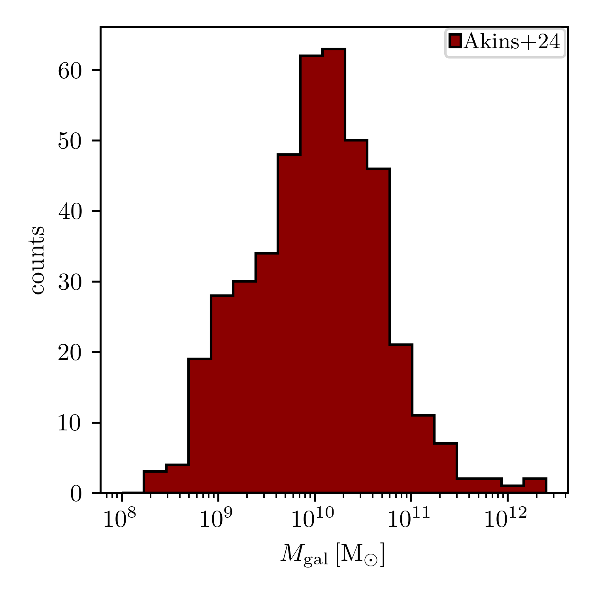
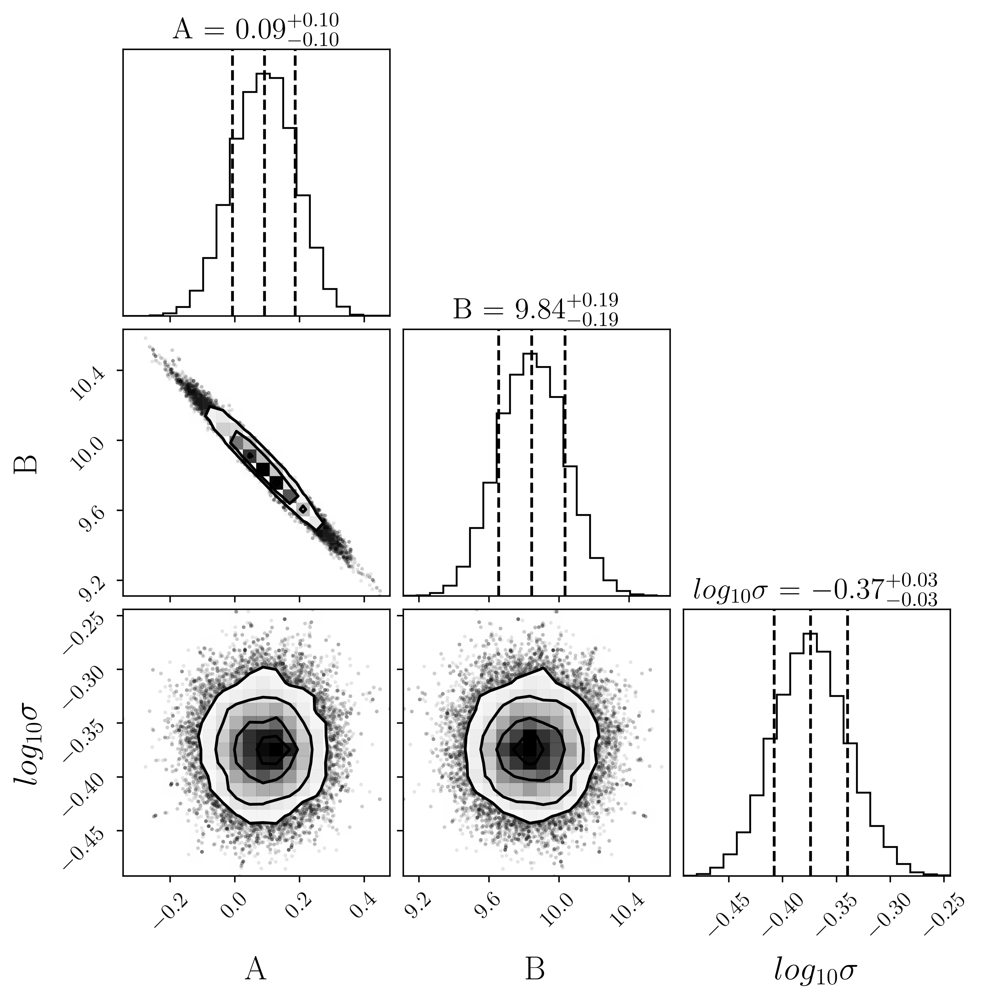
تم إدراج أفضل القيم الملائمة لدينا في الجدول 3. ميل الارتباط المفترض () مسطح تقريبًا. ومع زيادة نصف القطر بعامل 10، فإن كتلته، في المتوسط، تزيد فقط بعامل . يشير هذا إلى أن المجرات موزعة عبر المستوى مع توزيع كتلي يتم تحديده بشكل أساسي من خلال عوامل أخرى غير الحجم. نؤكد أيضًا على أننا نأخذ في الاعتبار الحدود العليا لنصف القطر نظرًا لأن جميع المصادر تقريبًا لم يتم حلها مكانيًا. قد تؤدي القياسات الأكثر دقة لنصف القطر وتضمين المزيد من المعلمات الحرة إلى تغيير هذا التحليل.
| Parameter | Best fit |
|---|---|
| A | |
| B | |
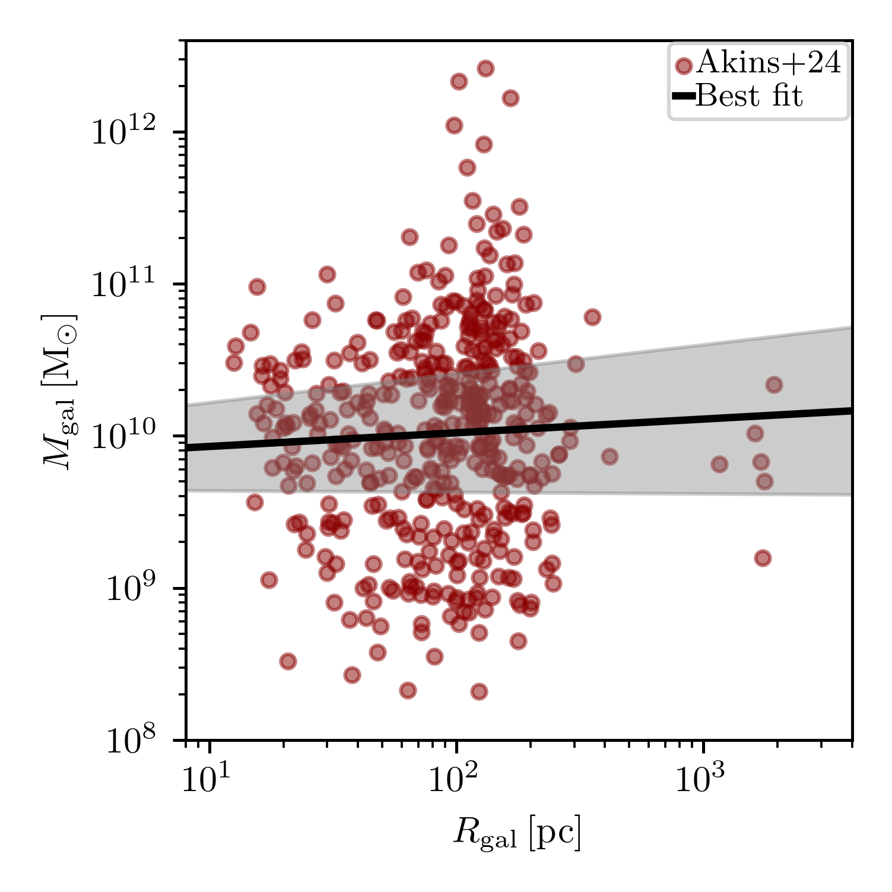
Appendix B مقارنة العينات
في هذا الملحق، قمنا بمقارنة خصائص A+24 العينة، التي نستخدمها لتحديد المعلمات الهيكلية للنقاط الحمراء الصغيرة (LRDs)، والعينة الفرعية من S+25 المستخدمة لتحليل الأشعة السينية في هذا العمل.
في الشكل 15، قمنا بمقارنة توزيعات الكتلة النجمية للعينتين. ال A+24 العينة (الحمراء) تصل إلى ذروتها عند كتل عالية ( M⊙)، في حين أن S+25 تُظهر العينة الفرعية (الأزرق) ذيلًا ممتدًا من الأجسام منخفضة الكتلة يصل إلى M⊙. نحن نرى أن إدراج المجرات ذات الكتلة المنخفضة في S+25 العينة لا تقدم أي تحيز في النمذجة لدينا. ويرجع ذلك إلى الطبيعة المتأصلة لتكديس الأشعة السينية، حيث تكون الإشارة المجمعة مرجحة بالتدفق. نظرًا لأن لمعان الأشعة السينية يقاس بالكتلة النجمية (, مثلاً، Anderson et al. 2015)، تهيمن المجرات الأكثر ضخامة في العينة على الإشارة المكدسة. مجرة واحدة كتلتها يساهم M⊙ بتدفق مماثل لآلاف أنظمة M⊙. ولذلك، فإن المعلمات الهيكلية للنهاية الهائلة للسكان (ممثلة بـ A+24 عينة) هي التوزيعات القبلية ذات الصلة لنمذجة المصادر المسؤولة عن انبعاث الأشعة السينية المحتملة.
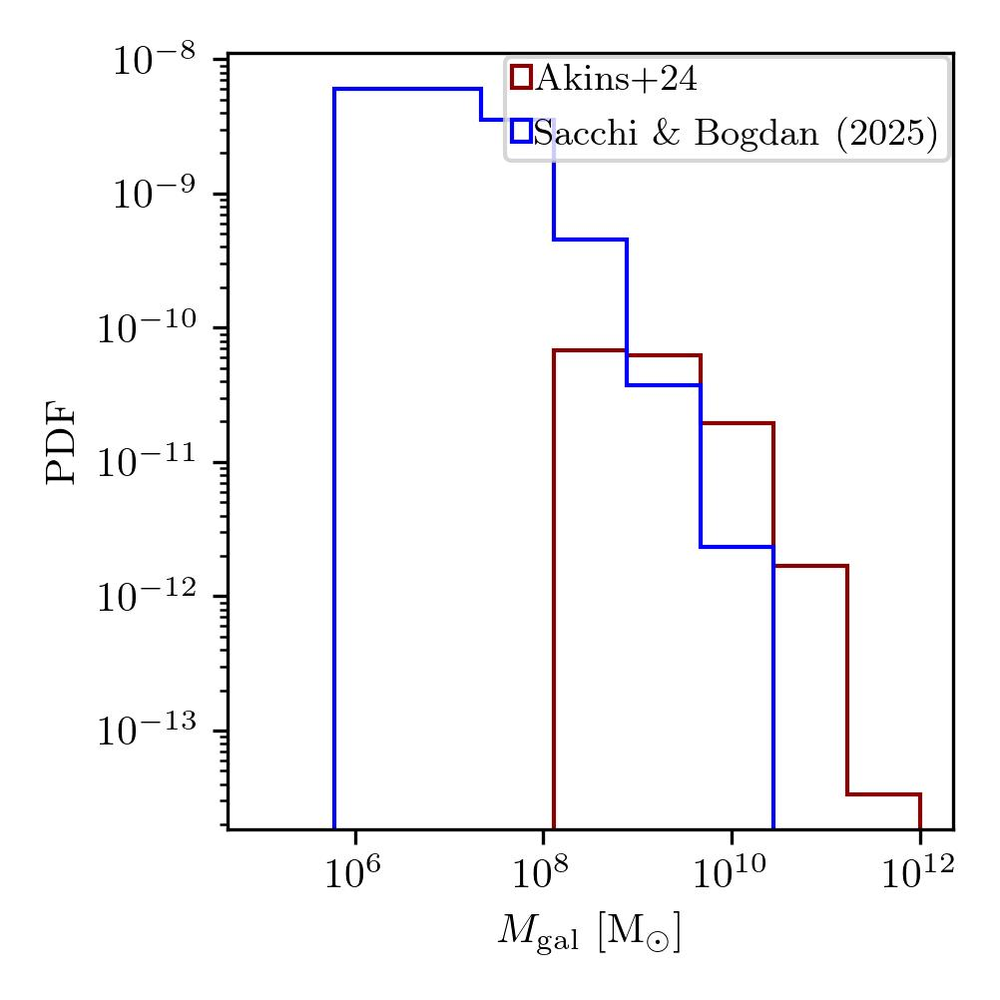
في الشكل 16، نعرض توزيعات الانزياح الأحمر. تظهر كلتا العينتين تداخلًا كبيرًا في نطاق ، الذي يهيمن على إشارة التكديس. ومع ذلك، S+25 تمتد العينة إلى كل من الانزياحات الحمراء الأدنى () والأعلى (). نحن نفترض أن الخصائص الهيكلية لـ LRDs تظل قابلة للمقارنة عبر نافذة الانزياح الأحمر هذه. بالنسبة للذيل ذو الانزياح الأحمر العالي ()، يعد هذا افتراضًا متحفظًا. من المتوقع نظريًا ورصديًا أن تكون المجرات ذات الانزياحات الحمراء الأعلى أكثر إحكاما عند الكتلة النجمية الثابتة (مثلاً، Shibuya et al. 2015; Allen et al. 2025). من خلال تطبيق توزيع نصف القطر من عينة الانزياح الأحمر الأقل قليلاً من A+24، فمن المحتمل أننا نبالغ في تقدير الأحجام الفيزيائية لهذه المصادر ذات الانزياح الأحمر الأعلى. في نموذجنا القائم على الاصطدام، يشير نصف القطر الأكبر إلى كثافات نجمية أقل، وبالتالي انخفاض كفاءة تشكل BH. وبالتالي، من المحتمل أن يقلل النهج الذي نتبعه من كثافة الكتلة BH عند نهاية الانزياح الأحمر العالي، مما يعزز استنتاجاتنا بأن التشكل الاصطدامي هو قناة قابلة للحياة.
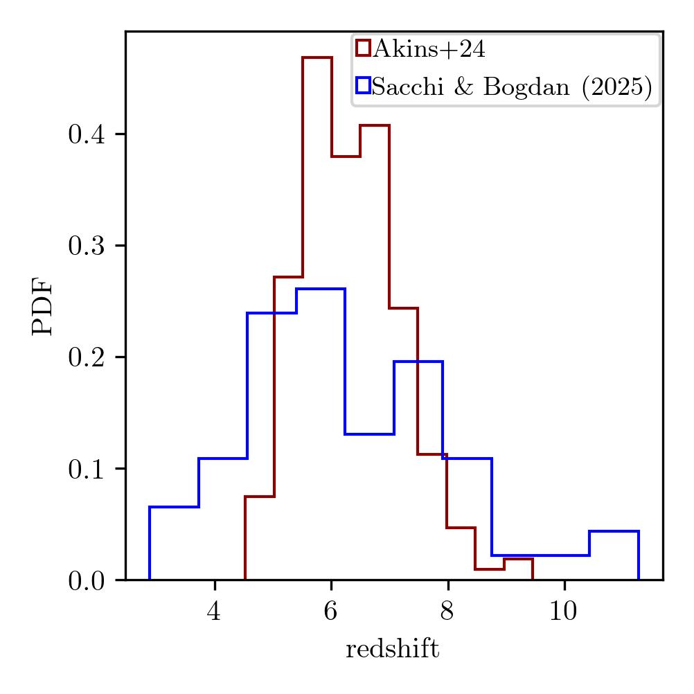
Appendix C أثر التراكم في الكتل النهائية للثقوب السوداء
الشكل. 17، قمنا بتعيين متوسط وقت تشكل BH () كجزء من عمر المجرة () عبر فضاء المعلمات الخاصة بنا و. أولاً، نلاحظ أنه في النماذج ذات ، كما هو الحال في المجرات الحلزونية النموذجية في الكون المحلي، تميل البذرة BH إلى التشكل في وقت متأخر نوعًا ما. في هذه الحالة، ليس هناك الكثير من الوقت المتاح للنمو اللاحق. في هذه الحالة، لا يمكن تقييد معدل التراكم بقوة من المقارنة مع كتل BH المرصودة، حيث أن النافذة الزمنية للتراكم قصيرة نسبيًا. ومع ذلك، فإننا نورد هنا أيضًا نماذج تتشكل فيها البذرة BH في مراحل مبكرة، مما يتطلب افتراضات أكثر تطرفًا حول المعلمة . يكشف شريط الألوان، ، عن اتجاه قوي حيث تنتج الطرازات ذات () العالية و () بذور BH في وقت مبكر جدًا. في هذه السيناريوهات المتطرفة (المنطقة الأرجوانية الداكنة)، تتشكل البذور، في المتوسط، عندما تكون المجرة على وشك من عمرها الحالي (). نحن ندرس الآثار المترتبة على هذا التشكل المبكر في الشكل 18. نختار نموذجًا تمثيليًا من هذا النظام المتطرف المبكر: و، ونحسب كتلة BH النهائية بعد فترة من التراكم.
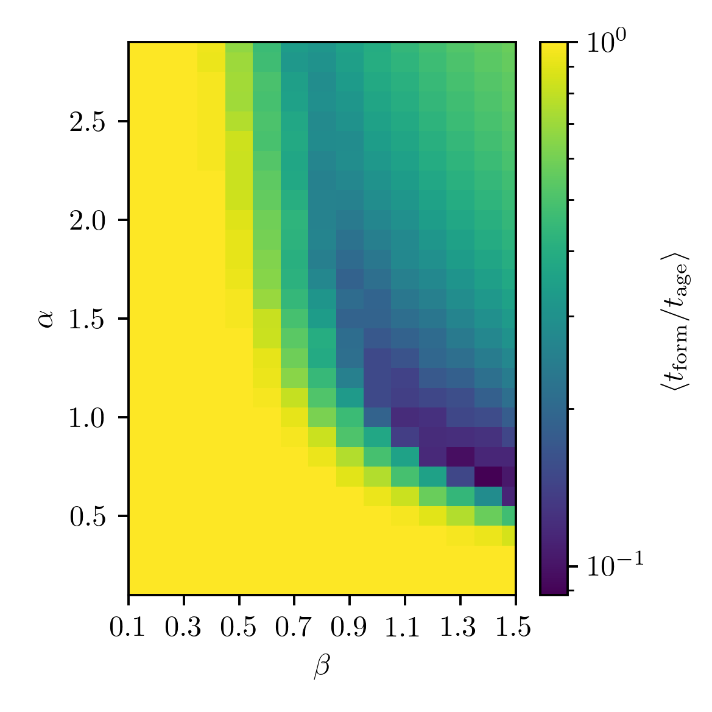
نحن نقدر الكتلة النهائية في وقت t باستخدام التعبير من Shapiro (2005)، الذي يصف النمو الأسي:
| (15) |
حيث هو وقت تشكل بذرة BH (أي ما يعادل من الشكل 1)، هي كتلة البذور الأولية، و هي الكتلة النهائية (الموافق لعمر المجرة، ). المعلمة هي لمعان التراكم كجزء من لمعان إدنغتون. الكفاءة الإشعاعية، ، هي جزء من طاقة الكتلة الباقية المتراكمة المحولة إلى ضوء (عادةً ). المقياس الزمني للتراكم المميز هو ، حيث هي كتلة BH و هي سرعة الضوء. باستخدام هذه الشكلية، نقوم بتحليل النتائج في الشكل 18. هنا، نختار نموذجًا تمثيليًا من النظام المتطرف المبكر المحدد في الشكل 18، وعلى وجه التحديد، نموذج و. نحن نستكشف تأثير الكفاءة الإشعاعية BH () ونسبة إدنغتون () على كتلة BH النهائية (). تتناقض اللوحتان مع نموذج منخفض الكفاءة لوحظ في النجوم الزائفة (مثلاً، Soltan 1982) بقيمة نموذجية (اللوحة العلوية) مع نموذج عالي الكفاءة (اللوحة السفلية) وهو الحد الأعلى لقرص تراكم رفيع (Shakura and Sunyaev 1973)كلاهما ينطبق على نفس مجموعة البذور الأولية (النقاط الزرقاء). بالنسبة للكفاءة الإشعاعية المنخفضة ()، يتم الاحتفاظ بـ للكتلة المتراكمة بواسطة BH، مما يؤدي إلى نمو جماعي سريع وفعال. ونتيجة لذلك، فإن معدلات التراكم المحدودة في إدنغتون (، الأرجواني) ومعدلات التراكم المعتدلة تحت إدنغتون (، البني) تنتج كتل BH النهائية كبيرة بشكل غير فيزيائي. تؤدي حالة ، على وجه الخصوص، إلى عوامل نمو ، مما يضع الكتل النهائية بعدة أوامر من حيث الحجم أعلى من النسبة القصوى التي لوحظت (خط متقطع). حتى معدل ينتج عوامل نمو ، مما يؤدي إلى تجاوز العلاقة بشكل منهجي. فقط معدل التراكم المنخفض جدًا (، الأخضر) يتجنب ذلك، لكنه ينتج نموًا ضئيلًا. على العكس من ذلك، تفترض اللوحة السفلية كفاءة إشعاعية عالية تبلغ ، وهو الأقصى النظري المتوافق مع الأقصى للغزل Kerr BH. في هذا السيناريو، يتم الاحتفاظ فقط بـ من الكتلة المتراكمة، مما يؤدي إلى نمو أكثر تدرجًا وتنظيمًا ذاتيًا. في ظل هذا الافتراض، يتطلب النموذج سيناريو التراكم الفرعي لإدنغتون. لقد وجدنا أن معدل إدنغتون الفرعي المعتدل (النقاط البنية) هو سيناريو معقول ماديًا. إنها تنتج عامل نمو نموذجي لـ . علاوة على ذلك، فإن معدل إدنغتون المنخفض (، الأخضر) يعد أيضًا قابلاً للتطبيق تمامًا، ويمثل مجموعة سكانية هادئة من BHs والتي شهدت الأدنى من النمو منذ تشكلها. من خلال مقارنة هذين السيناريوهين ذوي الدوافع المادية، نستنتج أن التراكم الفرعي لإدنغتون ليس مجرد آلية معقولة ولكنه في الواقع مطلوب للتوفيق بين كتل البذور الأولية مع مجموعة BH الحالية. يوفر النموذج الذي يجمع بين الكفاءة الإشعاعية العالية (المتوافقة مع الدوران BHs) ومعدلات التراكم المعتدلة تحت إدنغتون () إطارًا ممتازًا لشرح التطور المشترك لـ BHs والمجرات المضيفة لها.
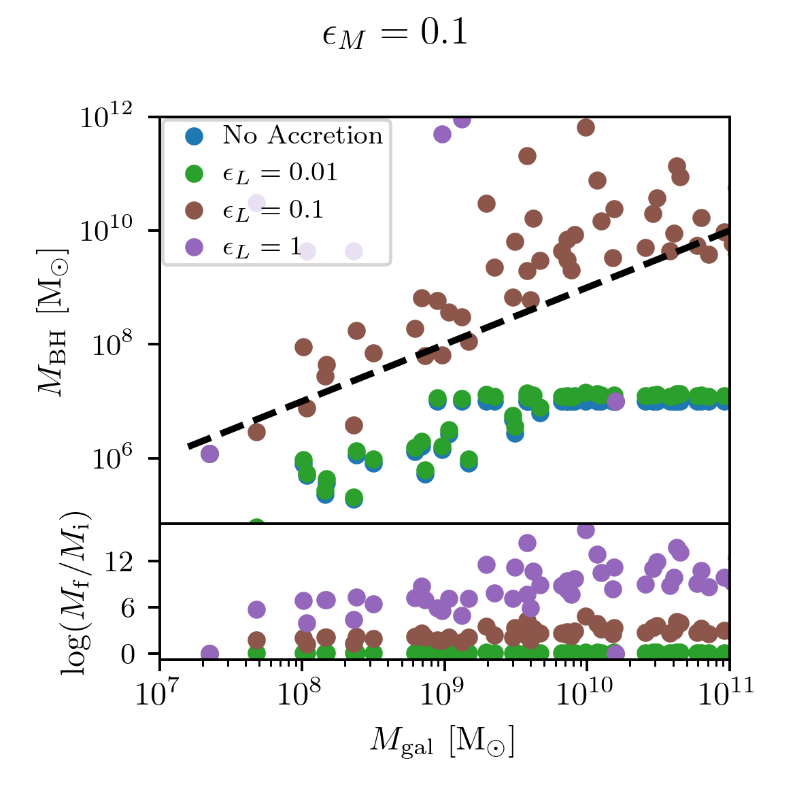
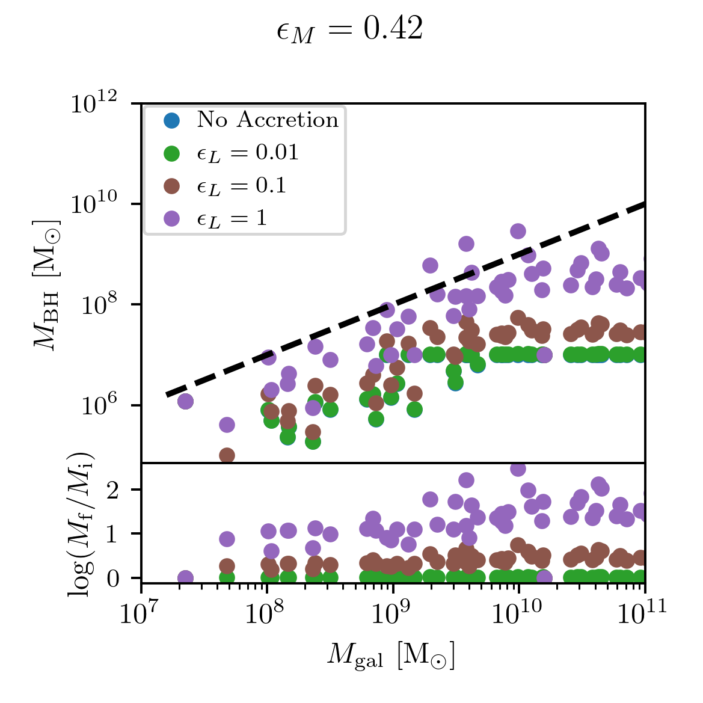
نؤكد على أن الاستنتاج أعلاه - وهو أن التراكم المعتدل تحت إدنغتون كافٍ - يعتمد على اعتماد مسار تطوري ملائم للتصادم (). في هذا النظام، تتشكل بذور BH بجزء كبير من الكتلة النهائية. في المقابل، بالنسبة لسيناريوهات تطور المجرات ”القياسية” (على سبيل المثال، ، النموذجية للمجرات الحلزونية المحلية)، تكون البذور الاصطدامية أصغر بكثير (). وبالتالي، تتطلب هذه السيناريوهات نموًا كبيرًا في الكتلة عبر تراكم الغاز لتتناسب مع كتل LRD BH المرصودة. وهذا يعني الحاجة إلى معدلات تراكم أعلى بمتوسط زمني ( أعلى) أو دورات عمل تقترب من الوحدة. كما هو موضح في تحليلنا الرئيسي (الشكل 11)، قد تؤدي هذه السيناريوهات التي يهيمن عليها التراكم إلى تدفقات الأشعة السينية التي تتجاوز الحدود العليا للتكديس ما لم يتم استدعاء الحجب الشديد. وبالتالي، فإن عدم اكتشافات الأشعة السينية تفضل بشكل غير مباشر المسارات التطورية ”للبذور الثقيلة” حيث يمكن أن تظل دورة النشاط منخفضة.
Appendix D التراكم العالي في كتل الثقوب السوداء المشتقة من الأشعة تحت الحمراء
في الشكل 19 نعرض المقارنة بين توزيع كتل BH المستمدة من حجم بافتراض نسبة إدنغتون العالية .
في هذه الحالة، يميل السيناريو القائم على الاصطدام إلى المبالغة في التنبؤ بكتل BH المقدرة من ملاحظات IR. بالنسبة للتصحيح البولومتري العالي (BC = 21، التوزيع البرتقالي)، فإن الأقصى لكتل BH المقدرة أقرب إلى تلك التي تنبأ بها نموذج التصادم الخاص بنا الذي يعتمد و.
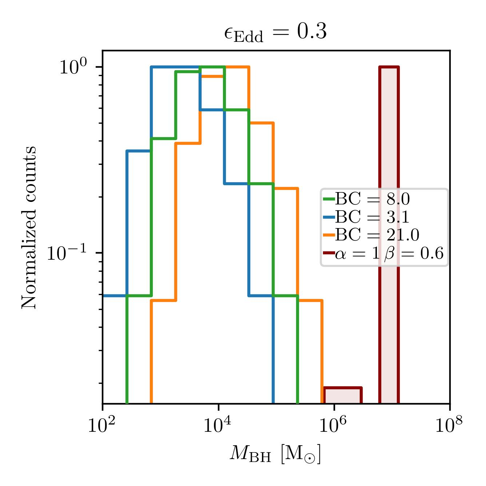